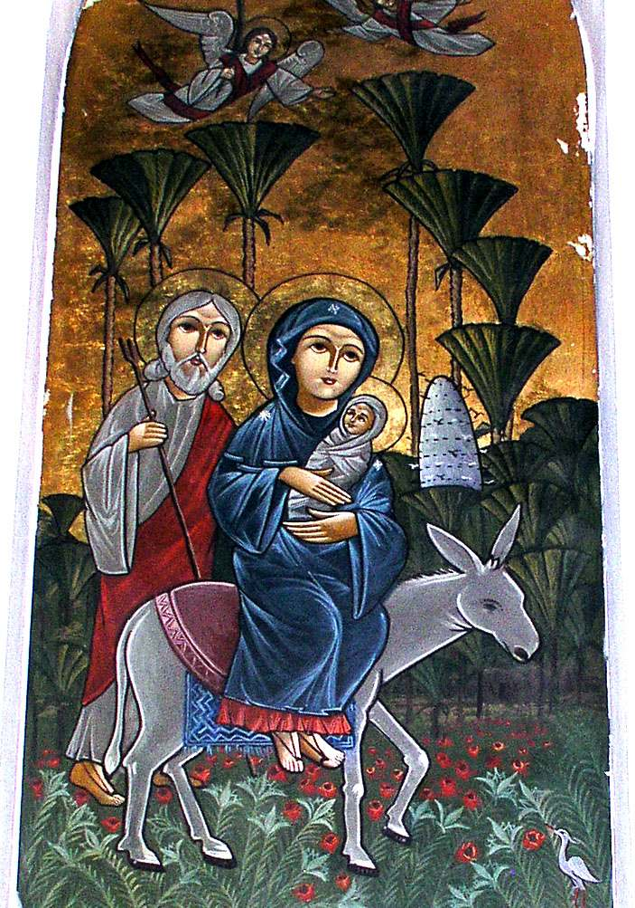
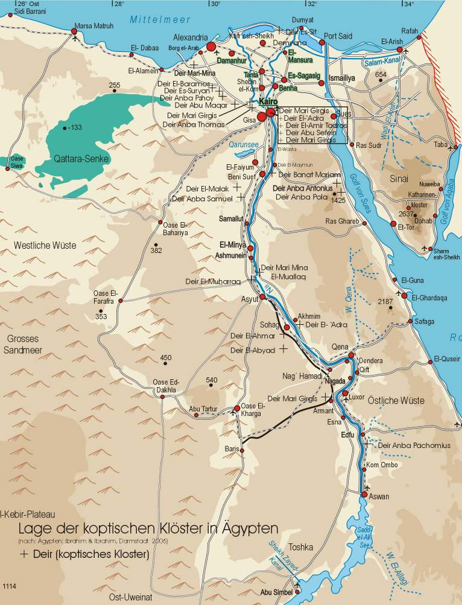

<!doctype html>
<html lang="de" dir="ltr">
<head><meta charset="UTF-8"><meta name="viewport" content="width=device-width,initial-scale=1"><meta name="description" content=")'5 ‫ ا ازة ا‬,- - St. Markus 2008"><title>)'5 ‫ ا ازة ا‬,- · St. Markus</title><link rel="preconnect" href="https://fonts.googleapis.com"><link rel="preconnect" href="https://fonts.gstatic.com" crossorigin><link href="https://fonts.googleapis.com/css2?family=Amiri:wght@400;700&family=DM+Sans:wght@400;500;600;700&family=Fraunces:opsz,wght@9..144,600;9..144,700&display=swap" rel="stylesheet"><link rel="stylesheet" href="../assets/site.css"><link rel="stylesheet" href="../assets/additions.css"></head>
<body class="article-page"><header class="article-header"><a href="../index.html#ausgaben" class="article-back">← Alle Ausgaben</a><a href="../index.html" class="brand"><span class="brand-mark">✣</span><span>St. Markus</span></a></header><main class="article-main"><p class="eyebrow">St. Markus · 2008 · Deutsch</p><h1>)'5 ‫ ا ازة ا‬,-</h1><p class="article-source">Ausgabe 1 · Seite 34</p><figure class="article-gallery"></figure><div class="article-text"><p>34 Die frühen Mönchsväter Anba Antonius (251 – 356): Der Hl. Antonius der Große wurde bei El-Wasta in der Nähe von Beni Suef, ca. 100 km südlich der heutigen Stadt Kairo, als Sohn wohlhabender Eltern geboren. Sie verstarben, als er achtzehn Jahre alt war. Wenig später hörte er in der Liturgie das Evangelium des Tages. Es verkündete: „Wenn du vollkommen sein willst, geh, verkauf deinen Besitz und gib das Geld den Armen; so wirst du einen bleibenden Schatz im Himmel haben; dann komm und folge mir nach.“ (Mt 19, 21) Darauf ging er hin, verkaufte sein Hab und Gut und gab das Geld den Armen. Er lebte als Eremit außerhalb des Dorfes und später viele Jahre in einer Grabhöhle in einem Berg. Auf der Suche nach mehr Einsamkeit verließ er schließlich diesen Berg und lebte in einer verlassenen Festung bei Maymun auf der östlichen Nilseite. Als ihm auch dorthin viele folgten, die als Mönche leben wollten, begann er, sie im asketischen Leben zu unterweisen. Um 305 n.Chr. wurde durch ihn auf diese Weise das christliche Mönchtum begründet. Ca. 312 n.Chr. zog der Hl. Antonius in die Östliche Wüste, wo er fortan für mehr als vierzig Jahre in einer Höhle auf dem Berg Kalzam, unweit des jetzigen St. Antonius Klosters am Roten Meer, lebte. Seinem Beispiel folgten viele nach. Für seine Schüler schrieb er in koptischer Sprache Regeln für das monastische Leben auf. Zuweilen begab er sich nach Deir El-Maymun, um seine alten Schüler dort zu unterstützen. Nach Alexandria reiste er zweimal: Einmal während der Christenverfolgungen unter Kaiser Diokletian, um seine leidenden Glaubensbrüder dort in ihrem Glauben zu bestärken. 337-338 n.Chr. suchte er diese Stadt erneut auf, um den Hl. Athanasius den Großen,</p>
<p>35 der der 20. Patriarch und Papst von Alexandria geworden war, im Streit gegen die Irrlehre der Arianer zu unterstützen. Der Hl. Antonius verstarb im Alter von 105 Jahren. Nach seinem Tod verfasste der Hl. Athanasius die bekannte Biografie des Heiligen, die Vita Antonii. Anba Pachomius (292 – 346): Dieser Heilige wurde im Gebiet zwischen Qena und Nag‘ Hammadi als Sohn nicht-christlicher Eltern geboren. Während seiner Zeit als römischer Soldat erfuhr er in Isna von der Nächstenliebe der christlichen Bewohner dort. Sie versorgten die Soldaten, gaben ihnen zu Essen und zu Trinken. Als er selbst einmal ins Gefängnis geworfen wurde, versorgten sie ihn. All dies beeindruckte ihn so sehr, dass er sich taufen ließ. Darauf hin lebte er sieben Jahre lang als Mönch unter der geistlichen Führung des Heiligen Palamon. Danach begann er auf Geheiß eines Engels Gottes mit der Gründung von Gemeinschaftsklöstern. Er gründete zahlreiche Klöster, sowohl für Mönche als auch solche für Nonnen, im Gebiet zwischen Qena und Achmim. Er stellte strenge Regeln auf für das Gebet, das Verhalten, die Unterkunft, die Bekleidung sowie Anleitungen zu manuellen Tätigkeiten. Diese Regeln wurden in koptischer Sprache verfasst und nieder geschrieben und ins Griechische sowie ins Lateinische übersetzt. Das Regelwerk wurde zur Grundlage für zahlreiche Klostergründungen in der damaligen christlichen Welt. Als Anba Pachomius verstarb, lebten mehrere Tausend Mönche und Nonnen in den von ihm errichteten Klöstern. Anba Shenute (348 – 466): Der Heilige Shenute der Archimandrit (d.h. Erzeinsiedler) wurde in Achmim West in der Nähe von Sohag geboren. Sein Onkel Pigol, der Mönch war, führte ihn bereits als er noch Kind war, in das asketische Leben ein. Nachdem der Heilige Shenute selbst Mönch geworden war,</p>
<p>36 zog er sich in die Wüste zurück und lebte dort fünf Jahre lang als Einsiedler. Nach dem Tode seines Onkels wurde er zum Abt des Klosters gewählt. Anba Shenute starb im gesegneten Alter von 118 Jahren. Zu seinen Lebzeiten gründete er im Gebiet von Achmim West mehrere Klöster, darunter das Weiße Kloster sowie auch einige Klöster für Nonnen. In allen lebte man in einem System, das eine Mischung darstellte zwischen dem System des Heiligen Antonius, wonach die Mönche vereinzelt in der Wüste lebten, aber am Sonntag in der Kirche zusammen kamen, um gemeinsam das Messopfer zu feiern, und dem System des Heiligen Pachomius, mit einer streng geregelten Klostergemeinschaft. Abu Maqar (300 – 390): Abu Maqar, auch als St. Makarius der Große bezeichnet, ist als „Vater der Mönche der Sketis“, einem Gebiet im Wadi Natrun, bekannt. Er wurde in einem Dorf in El-Minufiya im südlichen Nildelta geboren. Als er dreißig Jahre alt war, verließ er die Gemeinschaft seiner Mitmenschen und lebte fortan als Einsiedler am Rande seines Dorfes. Etwa zehn Jahre später ließ er sich im Gebiet der Sketis in einer Höhle nieder. Er erlangte einen Ruf als Asket, als vorbildlicher Lehrer und als Wundertäter. Sein erstes Kloster gründete er an der Stelle des heutigen Baramos-Klosters. Das zweite von ihm gegründete Kloster befand sich am Ort des heutigen Makarius-Klosters. Zu seinen berühmtesten Schülern gehören Anba Pishoi, Anba Musa der Schwarze sowie die beiden Kaiserssöhne Maximus und Domitius, die unter der Bezeichnung „die Römer“ („Baramos“) bekannt wurden. Vermutlich nannte man später das erste von Abu Maqar gegründete Kloster nach diesen beiden Römern „Baramos“. Als Abu Maqar im Alter von 90 Jahren starb, war er geistlicher Vater von ca. 5000 Mönchen, die in vier verschiedenen Gebieten der Sketis lebten.</p>
<p>37 Die Schwächung des Mönchtums und seine Wiederbelebung Nach der arabisch-islamischen Eroberung Ägyptens im 7. Jh. wurden über Jahrhunderte hinweg im Zuge der Christenverfolgungen zahlreiche Kirchen und Klöster immer wieder überfallen und zerstört. Bis zur Mitte des vergangenen Jahrhunderts war die Zahl der Mönche auf weniger als hundert und die der Nonnen auf ca. fünfzig gesunken. Die Situation begann sich schlagartig zu wandeln, nachdem ab etwa 1950 unter den koptischen Akademikern im Rahmen der Sonntagsschulbewegung eine spirituelle Renaissance einsetzte. Unter den Führern dieser Laienbewegung waren viele, die später als Mönche in Klöster eintraten oder Priester wurden, wie etwa Abuna Matta el- Miskin, Abuna Boulus Boulus, Abuna Salib Sourial sowie die Bischöfe Gregorius, Joannes, Athanasius, Samuel sowie auch Shenouda, der heutige Papst Shenouda III. Die meisten sammelten sich zunächst um Abuna Mina, den Einsiedler, den späteren Papst Kyrillos VI, und lernten von ihm das asketische Leben. Mit seinem Patriarchat, das von 1959 bis 1971 währte, begann eine Zeit der Errichtung neuer und der Restauration alter Klöster. Nachdem die Religiosität unter den Kopten in Ägypten insbesondere unter den jungen Akademikern zugenommen hatte, drängten jetzt viele von ihnen in die Klöster, so dass die Zahl der Mönche und Nonnen sprunghaft anstieg. Unter Papst Shenouda III hält bis zum heutigen Tag an, was unter seinem Vorgänger, Papst Kyrillos VI. begann. Das koptische Mönchtum und die koptischen Klöster heute Heute gibt es annähernd 1200 koptische Mönche. Sie leben in achtzehn Klöstern in Ägypten und in sechs Klöstern außerhalb Ägyptens. Die Auslandsklöster befinden sich in den USA, in Italien, England und in Jerusalem. Hinzu kommen ca. zwanzig neuere, noch nicht voll anerkannte Klöster in Ägypten und in dem Rest der Welt, in denen jeweils ein bis fünf Mönche leben. Es gibt zusätzlich zu diesen Klöstern acht koptische Nonnenklöster, von denen eines sich in Jerusalem befindet. In diesen Klöstern leben insgesamt etwa 500 koptische Nonnen.</p>
<p>39 Deir Anba Antonius am Roten Meer, Ägypten Deir Anba Pola am Roten Meer, Ägypten</p>
<p>40 Koptisch-orthodoxes Theologie-Kolleg Papst Shenouda III in Kröffelbach-Waldsolms in Deutschland Der koptischen Tradition der akademischen Theologie folgend, wurde im St.- Antonius-Kloster in Kröffelbach im Jahre 2002 ein koptisch-orthodoxes Theologie-Kolleg eröffnet, an dem derzeit etwa 40 StudentInnen studieren. 2006 und 2007 fand die Graduierung der ersten Jahrgänge (insgesamt 29 Absolventinnen und Absolventen) statt. Das Institut untersteht der Theologischen Fakultät des Bischofs für Lehre und religiöse Institute der Koptisch-Orthodoxen Kirche und wird von Seiner Heiligkeit, Papst Shenouda III, Papst von Alexandrien und Patriarch des Heiligen Stuhls des St. Markus, geleitet und finanziell getragen. Seine Heiligkeit trifft alle Entscheidungen bezüglich der an diesem Institut tätigen Dozenten und seiner Verwaltung, bestimmt die Studienfächer sowie die Termine der Abschlussprüfungen und bestätigt deren Ergebnisse. Ihm obliegt es, die ihm erforderlich erscheinenden Maßnahmen zu ergreifen, damit das Kolleg die ihm gesetzten Ziele verwirklichen kann. Hauptziele des theologischen Kollegs: 1. Die Bewahrung des wahren Glaubens, so wie er uns durch den Heiligen Abba Athanasius, den Apostelgleichen, und den Heiligen Abba Kyrillos I, die Säule des Glaubens, überliefert wurde, sowie der Lehren der Heiligen Schrift soll sicher gestellt werden. 2. Es soll eine Antwort auf Ketzerei und Häresie darstellen, die in unserer Zeit dort, wo es am wahren Glauben mangelt, weite Verbreitung finden. 3. Es sollen in ihm Religionslehrer und Diakone für die Koptisch-Orthodoxe Kirche herangebildet werden. 4. Die Gründung theologischer Kollegs auch außerhalb Ägyptens erfolgt im Sinne des Heiligen St. Markus, der seine Theologische Schule von Alexandria als Antwort auf nicht-christliche Philosophien errichtete. 5. Enger Kontakt zwischen den Theologie-Kollegs und religiösen Instituten der Koptisch-Orthodoxen Kirche innerhalb und außerhalb Ägyptens soll zu einem fruchtbaren Erfahrungsaustausch führen.</p>
<p>41 Zu belegende Fächer - die Dozenten des Kollegs: Fach Zahl der Jahre Dozent 1) Theologie Spirituelle Theologie 4 S.H. Papst Shenouda III Systematische Theologie 2 S.E. Metropolit Bishoy Dogmatik 4 Dr. Wedad Abbas Pastoraltheologie 2 S.E. Metropolit Pachomius Vergleichende Theologie 4 Pater Michael El-Baramosy Vergleichende Religionswissenschaft 2 Pater Michael El-Baramosy Ethik 2 Pfarrer Mina Wanis Liturgik / Ritus 4 Dr. Roushdy Wasif Ökumenischer Dialog 2 S.E. Metropolit Bishoy 2) Heilige Schrift Wissenschaft und Religion 2 S.E. Bischof Pola Neues Testament 4 Dr. Maurice Tawadrous Altes Testament 4 Herr Nagy Wanies Geografie der Heiligen Schrift 2 Prof. Dr. Fouad Ibrahim 3) Wissenschaft und Kirchliche Kunst Koptische Kunst / Archäologie 2 Prof. Dr. Ashraf Sadik Patrologie 4 Dr. Michael Ghattas Kirchengeschichte 4 Dr. Samir Fawzy Girgis Hymnologie 4 Herr Magdi Rashidi Familienrecht 1 S.E. Bischof Pola</p>
<p>42 4) Wissenschaft, Philosophie und Erziehung Fach Zahl der Jahre Dozent Jugendseelsorge/Jugenddienst 2 S.E. Bischof Moussa Christliche Erziehung 2 Pfarrer Boles Shehata Soziologie 1 Dr. Zakaria Sourial Psychologie 1 Dr. Zakria Sorial Philosophie und Logik 2 Herr Magdi Rashidi 5) Sprachen und Literatur Koptisch 4 Vater Pigol Bassily Griechisch 2 Herr Maged Jauhary Hebräisch 2 Dr. Wolfram Reiss Voraussetzungen für die Aufnahme ins Koptisch-Orthodoxe Theologie-Kolleg Papst Shenouda III – Regelungen zum Studienablauf: 1) Die Zugehörigkeit zu einer christlichen Kirche sowie der Besitz der Allgemeinen Hochschulreife sind Grundvoraussetzungen für die Aufnahme in das Kolleg. 2) Der vollständig ausgefüllte Aufnahmeantrag ist von den Bewerbern an die Kollegverwaltung im St. Antonius Kloster in D-35647 Waldsolms- Kröffelbach/Deutschland zu senden. Beizufügen sind: a) Kopie der Geburtsurkunde, b) Kopie des Reisepasses, c) Kopie des Reifezeugnisses, d) Empfehlungsschreiben der zuständigen Kirche oder des Priesters. 3) Das Studienjahr gliedert sich in zwei Semester: - Wintersemester: Oktober bis Januar (14 Wochen) - Sommersemester: Februar bis Mai (14 Wochen).</p>
<p>43 4) Vorlesungen finden während des Semesters immer freitags, samstags und sonntags statt. Eine Einheit umfasst jeweils eine Woche, d.h. Freitagabend, Samstag und Sonntag. 5) Die Zulassung zu den Prüfungen setzt voraus, dass der Kandidat/ die Kandidatin mindestens neun vollständige Einheiten besucht hat. 6) Während der vorlesungsfreien Zeit sind Reisen zur koptischen Mutterkirche in Ägypten oder zu anderen Theologie-Kollegs vorgesehen, um diese näher kennen zu lernen. 7) Der Besuch von Kursen an anderen Theologie-Kollegs der Koptisch- Orthodoxen Kirche ist auf die Verpflichtungen am hiesigen Theologie-Kolleg anrechenbar. 8) Das Studium ist auf vier Jahre ausgelegt. Am Ende wird der Abschluss „Baccalaureus der Theologiewissenschaften“ (BA der Theologie) verliehen. 9) Der Besuch der Vorlesungen als Gasthörer ist zulässig, berechtigt jedoch nicht zur Ablegung der Abschlussprüfungen. S. E. Bischof Moussa unterrichtet das Fach Jugendseelsorge am Koptisch-Orthodoxen Theologie-Kolleg im St. Antonius Kloster in Kröffelbach</p>
<p>44 Hohe deutsche Auszeichnung für drei verdiente Kopten: Verleihung des Bundesverdienstkreuzes an Dipl. Ing. Ibrahim Samak und Dr. Michel Khalil und der Bundesverdienstmedaille an Dipl. Ing. Fouad Khalil Im September 2007 wurde durch den Bundespräsidenten Horst Köhler das Verdienstkreuz am Bande des Verdienstordens der Bundesrepublik Deutschland an zwei in Deutschland lebende Kopten verliehen. Bereits im Mai 2006 hatte der Bundespräsident ein Mitglied der Koptischen Gemeinde in Deutschland durch Verleihung der Bundesverdienstmedaille ausgezeichnet. Die so Geehrten erfuhren hierdurch eine Anerkennung ihrer um Staat und Volk erworbenen besonderen Verdienste, insbesondere ihres herausragenden ehrenamtlichen Engagements. Am 5. Oktober 2007 überreichte der Kultusminister von Baden-Württemberg, Helmut Rau, in Anwesenheit des ägyptischen Botschafters Mohamed Al-Orabi, das Bundesverdienstkreuz am Bande der Bundesrepublik Deutschland an den Diplomingenieur Ibrahim Samak. 1939 im ägyptischen Luxor geboren, lebt Ibrahim Samak seit mehr als vierzig Jahren im Raum Stuttgart, wo er sich beruflich ebenso wie auch ehrenamtlich für die deutsch- ägyptischen Beziehungen und für die erfolgreiche Integration von Zugewanderten in Deutschland einsetzt. Als Diplom-Ingenieur und Unternehmensgründer gehört Ibrahim Samak zu den Pionieren der Solarenergie. Er hat maßgeblich zum wissenschaftlichen und technologischen Fortschritt im Bereich der erneuerbaren Energien beigetragen. Sein besonderes Verdienst besteht jedoch darin, dass er es stets verstand, berufliche Tätigkeit mit ehrenamtlichem Engagement zu verknüpfen, indem er für die ländliche Bevölkerung in der ägyptischen Provinz mit Hilfe der Photovoltaik Versorgungssysteme aufbaute, die für sie bakterienfreies Trinkwasser, Strom sowie Bewässerungswasser verfügbar machten.</p>
<p>45 Er wurde hierdurch ebenso wie die beiden anderen Geehrten „Botschafter“ zwischen seiner Wahlheimat Deutschland und Ägypten. Herr Ibrahim Samak ist zudem Gründer der koptisch-orthodoxen Gemeinde in Stuttgart, deren Vorsitzender er ist, und die über gute Kontakte zur württembergischen evangelischen Landeskirche verfügt. Die koptische Kirche in Deutschland verdankt ihm viel. So geht das „Internationale ökumenische Jugendtreffen“ auf seine Initiative zurück, und er beteiligte sich maßgeblich an der Errichtung des koptischen St. Antonius Klosters in Kröffelbach, insbesondere an der Gründung eines theologischen Kollegs dort im Jahre 2002. Herr Samak gründete darüber hinaus den gemeinnützigen Verein „African Hope e.V.“, der inzwischen über eine breite Basis in Europa verfügt und in Afrika Unterstützung leistet, die sich insbesondere auf medizinische Hilfe sowie auf die Ausbildung junger Menschen im handwerklichen wie auch im universitären Bereich bezieht. Die feierliche Überreichung von Orden und Urkunde an Dr. Michel Khalil fand am 11. Dezember 2007 in der Alten Kirchschule in Flörsheim am Main durch den zuständigen Landrat des Main-Taunus-Kreises, Berthold Gall, der die Laudatio sprach, des ägyptischen Generalkonsuls aus Frankfurt, Mahmoud El Deeb, und der Konsulin Dalia Ghubrial, sowie des Bürgermeisters von Flörsheim, statt. Zu den anwesenden Honoratioren zählten auch der koptische Bischof für Deutschland, Anba Damian, der Abt des St. Antonius Klosters, Vater Michael, und der Pfarrer der koptisch-orthodoxen Gemeinde in Frankfurt, Abuna Pigol Bassili. Dr. Michel Khalil Boutros wurde 1931 in Maghagha südlich von Kairo geboren und studierte zunächst in Kairo Humanmedizin. Seit 1962 lebt er in Deutschland, wo er sich weiter qualifizierte, indem er u.a. promovierte und eine fachärztliche Ausbildung erhielt. Neben seiner intensiven beruflichen Tätigkeit fand er stets Zeit für seine Familie, seine koptische Kirche und auch für vielerlei ökumenische Aktivitäten. So engagierte er sich bereits 1975 zusammen mit Bischof Samuel mit Hilfe und Unterstützung des evangelischen kirchlichen Außenamtes für die Gründung einer koptischen Gemeinde in Deutschland. Diese blieb ihm bis heute ein wichtiges Anliegen. So war die Gründung eines koptischen Zentrums, des St.- Antonius-Klosters in Kröffelbach/Waldsolms, eine seiner Visionen, die verwirklicht wurde. Zu seinen humanitären Aktivitäten gehört die Förderung junger Ägypter bei ihrer Ausbildung ebenso wie die Unterstützung der Müllsammler von Kairo in einem größeren Projekt zusammen mit deutschen StudentInnen, das Organisieren notwendiger medizinischer</p>
<p>46 Behandlung von bedürftigen Patienten aus Ägypten in Deutschland, und die Linderung von Armut in den von der Not am härtesten betroffenen Gebieten Afrikas durch den Verein “African Hope e.V.“, dessen Vorstandsmitglied er ist. Trotz seines anerkannten sozialen Engagements und seines persönlichen Erfolgs blieb Herr Dr. Khalil stets bescheiden. Bereits im Mai 2006 war durch den Bundespräsidenten Horst Köhler die Verdienstmedaille des Verdienstordens der Bundesrepublik Deutschland an den in Berlin lebenden Dipl. Ing. Fouad Khalil verliehen worden. Die Überreichung fand im Juli 2006 durch Staatssekretärin B. Kisseler in der ägyptischen Botschaft in Berlin in Anwesenheit des koptischen Bischofs für Deutschland, Damian, statt. Dipl. Ing. Fouad Khalil Guirguis wurde 1929 in Maghagha unweit El-Minya im Niltal geboren. Er absolvierte ein Ingenieurstudium in Ägypten, ehe er zum Praktikum und zur Fortsetzung seiner Studien nach Deutschland kam. Bereits seit 1958 lebt er hier, wo er eine neue Heimat fand. Wenn er auch bereit war, in Deutschland Wurzeln zu schlagen, so war er sich doch jederzeit seiner eigenen religiösen Wurzeln bewusst. An der Gründung der koptisch-orthodoxen Gemeinde in Berlin im Jahre 1975 hatte er wesentlichen Anteil und ist bis heute ihr Schatzmeister und vornehmster Mäzen. Er setzte sich gleichzeitig für die Ökumene ein. So ist er Mitglied des Koptisch-Ökumenischen Zentrums, das 1998 in Berlin- Lichtenberg gegründet wurde, und eine bedeutende Persönlichkeit des Dialogs und des religiösen Miteinanders in Berlin. In ihrer Laudatio bezeichnete ihn die Staatssekretärin als ein „Paradebeispiel“ für gelungene Integration. Dipl. Ing. Fouad Khalil ist jedoch mehr als das. Als erfolgreicher Unternehmer hatte er auch die Möglichkeit, sich für die Integration vieler zugewanderter junger Menschen in Berlin einzusetzen. Sein aktives Wirken führte zum Brückenschlag zwischen seiner alten Heimat und der neuen, etwa indem er für Gruppen des Berliner Migrantenrates oder der Potsdamer Fachhochschule Reisen nach Ägypten organisierte. So bezeichnete man ihn als „inoffiziellen Botschafter“ Ägyptens in Berlin - und Berlins in seinem Heimatland. Wir gratulieren Herrn Dipl. Ing. Ibrahim Samak, Herrn Dr. Michel Khalil und Herrn Dipl. Ing. Fouad Khalil sehr herzlich zu ihrer Ehrung.</p>
<p>47  ‫ا‬  ‫ا‬ ‫اب‬  1</p>
<p>54 (Nach: „Al-Aghsan“, Zeitschrift des Koptischen Episkopats für die Jugend, Kairo)  8</p>
<p>55  ‫س‬ ‫أ‬  ‫ا‬ ‫د‬    ‫خ‬    ‫دة‬  ‫ا‬ ‫ااز‬ ‫إاه‬ ‫&quot;اد‬# ‫م‬ % &amp;# 1980 &amp;+‫أو‬ -‫ا‬./   ‫ا‬  ‫ا‬ 0 ‫ا‬ 1‫د‬23 425‫ا‬ ،78 9 :‫ا‬ ‫ل‬ &lt;‫أ‬ ، =-‫و‬ &amp;# ‫خ‬ ‫آ‬ ‫ة‬. &amp;# ‫س‬ ‫أ‬  ‫ا‬ ‫د‬ ?-5 ‫ل‬ ‫ر‬- A+ B‫ا‬ ‫وس‬ 8 ‫ل‬ C ‫ت‬  E ‫ارت‬# ‫ل‬ 3 &amp;# F/‫اا‬ . ‫ات‬H  I/‫ا‬ ‫ا‬H‫ه‬ 5J‫أ‬ ./‫و‬ ‫دة‬.F5 ‫ا‬K 7 ‫ن‬ : N A/‫و‬ ، O2C‫و‬  ‫أ‬ ‫ل‬ 3 N # P‫ا‬ =-5 O# ‫ذ‬ R&lt; 2‫ا‬ ‫ي‬ &amp;#  F‫ا‬  P‫ا‬ # ‫ا‬ R&lt; 2 N% .F E TH‫وآ‬ ،  ‫أ‬ ‫ط‬ / ‫ا‬ ‫ت‬ FV8 ) 3‫و‬ K2 ‫و‬ ‫ورف‬.-‫ودو‬ ‫وآ‬ ‫ارت‬# ‫رت‬ V85 .( A‫ااه‬ .% P8 ،F- 3 ‫ت‬  E O =8 ،‫ا‬.C Z‫د‬ ‫ه‬ .‫ا‬  2 ‫[ن‬# T‫ذ‬ E‫ور‬ + ‫ا‬ ‫ان‬ \.‫أ‬  ‫ون‬ 2‫ا‬ ‫وادى‬ ‫اء‬+ _ ،. F5‫وا‬ ‫ا`ة‬ &amp;% aJ  .  ‫ا‬ ‫آ‬ b 59‫إ‬  ‫ا‬ P2‫ا‬ \ /‫وأ‬ [ R#‫اا‬ ‫ة‬c2F‫ا‬ .% &amp;# .‫ا‬ ‫ح‬ 55# 25   1980 ‫ا‬ ‫ة‬.% 1a9 ، .‫و‬ 5`‫ا‬ ?Z 2‫ا‬ ‫و‬.2‫و‬  2 .OF ?Z 2‫ا‬ 29 B‫ا‬ 425‫وا‬ ‫ل‬ ‫ر‬- A+ B‫ا‬ 425‫وا‬ /g‫ا‬  9</p>
<p>56 ‫وأط‬   ‫س‬  ‫أ‬ ‫وا‬  ‫ا‬ ‫ان‬ ‫ا‬ !‫و‬ &quot; ‫اا‬ #‫أور‬ %‫آ‬  ‫آ'ون‬ . ‫م‬ 8 ‫آازي‬ ‫اغ‬# &amp;#   .‫ا‬ ‫أن‬ ‫وا‬ . _ # .#‫أو‬ ‫ات‬2- ‫ة‬.F 7Z g‫إ‬ -‫ا‬./   ‫ا‬  ‫ا‬ 0 ‫ا‬ 1‫د‬23 ‫ن‬ ‫ره‬ iF‫و‬ ‫ل‬ ‫ر‬- A+ B‫ا‬ 425‫ا‬  ‫أ‬ &amp;/ .` ‫اس‬ ‫ا‬ ‫د‬ . ‫ارت‬# &amp;# ‫ة‬..C ?Z 2‫آ‬ ‫ا‬P-# j‫و‬ # ‫وه‬ ‫رج‬  ‫وه‬ N‫و‬ ‫رت‬ V853‫و‬ ‫ورف‬.-‫ودو‬ . _-‫أر‬ ‫ا‬. ‫ا‬ &amp;#‫و‬ -‫ا‬./   ‫ا‬ .‫ا‬ l‫إ‬ ‫د‬ ‫ن‬ ‫ره‬ N N%‫ور‬ N ‫راه‬ ‫رك‬ ‫ا‬ ‫اس‬ ‫ا‬ . _Z ` B‫ا‬ ‫ب‬ ‫ا‬ ‫ه‬ N ‫ااه‬ NH‫ه‬ .9‫أ‬ ‫ن‬ ‫وآ‬ 72% ‫ى‬H‫ا‬ ،l-‫ا‬ ‫ا‬ -‫ا‬./   ‫ا‬ . 5‫ر‬ ‫ة‬KC‫و‬ ‫ة‬5# .F . ‫ا‬H‫ه‬ _+‫ووا‬ ‫&lt;ال‬ .‫ا‬ ‫ء‬ 2 8‫و‬ ?-8 A‫ااه‬ ‫ب‬ ‫ا‬ 27 ‫ام‬ &amp;‫إ‬  % . #‫أ‬ 5- l‫ا‬9 ،‫ة‬ ‫آ‬ .‫ا‬ 9 P‫و‬ pc‫و‬ . . ‫ت‬ F-5 4P8 O‫أ‬ ‫أي‬ ‫اض‬E ‫ا‬ ‫دة‬.F5  5P . r O#- ./ &amp;  &amp;# /‫أ‬ ./ .‫ا‬ ‫ن‬ ‫وآ‬ ‫ط‬P . ‫ات‬+ ‫آ‬  N‫و‬ -‫ا‬./   ‫ا‬ ‫ة‬+‫و‬ ‫د‬ OV .‫ا‬ 5‫ر‬ _% ‫وء‬.‫وه‬ \+‫و‬ . ‫ن‬s‫ا‬ .‫ا‬ &amp;# 4 +‫أ‬ &amp;F‫ا‬ :‫ا‬ ‫وة‬ : + 2  ‫ح‬ T# _3 &amp;% ‫ة‬ ‫آ‬ P2‫آ‬ .K  O‫و‬ ،Ag`  _J‫ا‬.‫ا‬ N ‫ج‬ CK‫ا‬ TZ‫زا‬ N ‫ر‬+‫و‬ - =Z 9 ‫رة‬+‫و‬ ‫أ‬ u &amp;% ، &amp;% O‫آ‬ .‫ا‬ l ‫ازا‬ ‫ا‬ . l P‫ا‬ ‫ب‬ - B‫ا‬ 425‫ا‬ OaF -‫ر‬ ./‫و‬ . .C‫و‬ ‫م‬ % &amp;#  ‫ا‬ -‫ا‬./ O23‫د‬ ،4‫ا‬H ‫ث‬w P2‫ا‬ 1HO 1990 =-‫و‬ ‫ا‬ 4H‫ا‬ ، ?.‫ا‬ -‫إ‬ &amp;% ‫ا‬ ‫س‬ ‫أ‬  -‫إ‬ &amp;% ‫ي‬ ‫ا‬ 4H‫وا‬ ،‫ن‬ ‫اه‬ ‫أ‬ ?/ ‫ر‬  ?.‫ا‬ -‫إ‬ &amp;% l ‫ا‬ 4H‫وا‬  ‫ا‬  5‫ا‬ .Z / ?‫ر‬ ?.‫ا‬ ‫ل‬-‫ا‬ . + O2 N ،NP.‫ا‬ ‫و‬ ‫اء‬.Og‫ا‬ ‫د‬ PC‫أ‬ N ‫اه‬C P2‫ا‬ 1HO .C‫و‬ - 2w‫أ‬ ?.‫وا‬ ‫ل‬-‫ا‬ ‫س‬  ?.‫وا‬ ‫ل‬-‫ا‬ ?/ ‫ر‬  ?.‫ا‬ ‫س‬ ‫ن‬C ?.‫وا‬ ?‫ر‬ ?.‫وا‬ l-‫ا‬ ) .Z / 318  5‫ا‬ N ‫ي‬.2C  ‫ا‬ ( ‫ن‬ ‫ود‬ ‫ن‬ K/ ‫ن‬ P.‫وا‬ ‫س‬2 PE‫أ‬ ?.‫ا‬ ‫أم‬  P.‫وا‬ J‫أ‬ ‫اء‬.O3‫و‬ ‫ام‬ ‫اء‬.O3‫و‬ l ‫او‬ ?CC ‫ر‬  ?.‫وا‬ . + a‫أ‬ ‫م‬.`5P8 l‫وه‬ ،P2‫ا‬ N &amp;P‫ا‬ ‫ور‬.  9 P‫ا‬ ?2 ‫ى‬J‫أ‬ P2‫آ‬  10</p>
<p>57 ‫*ل‬+, !-‫ا‬ !#.‫ا‬ ‫ل‬ /* 01‫وآ‬ ‫ات‬34 ‫وا‬ ‫ات‬ 56 7 !8‫آ‬ . + ،=# ‫ن‬ ‫ه‬  ‫ص‬ J _5P ‫ء‬KC 7  ‫آ‬ ..C &amp;2  ‫اك‬ P2‫آ‬ 7 -‫ا‬./ ‫م‬5 ‫أن‬ s‫إ‬ Oc2 b‫و‬ ،‫ن‬ ‫ه‬  + J 4‫ا‬H ‫ث‬w O &amp;5‫ا‬ _Z ` O23.‫و‬ zF‫ا‬  ‫ا‬ .  9 P2‫ا‬ 1HO‫و‬ ، ‫د‬ P.‫ا‬ ‫د‬ -‫ر‬ ‫ت‬ ‫أ‬ _ % P‫ا‬ ‫ده‬ F‫و‬ ، P5 ‫ص‬ J ‫س‬C O‫و‬ 4 9 + . .C8 &amp;2 ‫ا‬ ‫ا‬HO‫و‬ NZKC N ‫ن‬58 / _‫وآ‬ ‫ن‬ ‫اه‬ l/ : ‫ة‬  ‫ودورة‬ ‫اءة‬ ‫ن‬ ‫و‬ P  / - ‫ا‬ ‫ء‬ |‫و‬  ‫ا‬ -‫ا‬. ‫ة‬.F l/ a‫أ‬ 7‫و‬ ، ‫آ‬ . ‫ص‬ J IV .C‫و‬ 5 ‫ن‬ ‫ه‬ ‫ن‬ ‫اه‬ ‫ء‬ s  + J 1.Z ‫و‬ j  N ‫ن‬ . a‫أ‬ &amp;2   R‫و‬ ‫ن‬ ‫ه‬ .9 . + 7‫و‬ ‫آ‬b‫ا‬   ‫ص‬ J ‫و‬ _5P ..V‫ا‬ &amp;2 ‫ا‬ N Js‫ا‬ ‫ء‬KV‫ا‬ ‫ف‬a 9‫ا‬5-‫إ‬ + ..C &amp;2  &amp;# ‫رة‬ V2‫ا‬ ‫ل‬ }3‫وأ‬ ‫ء‬ O‫وا‬ ‫م‬ ‫وا‬ ‫آ‬ P 3‫ور‬ ‫ت‬.ّ 3 . + .‫ا‬ &amp; ‫ا‬ ‫ح‬+‫إ‬ 8 TH‫آ‬ ‫ة‬ ‫ا‬ ‫رض‬ ‫ا‬ F / ‫اء‬3‫و‬  ) 2 ‫ان‬.# ( &amp;# .‫ا‬ N _FC  ،‫ب‬ g‫ا‬ ‫ت‬ &lt; g‫و‬ ‫وار‬K  + J \FC‫و‬ .‫ا‬ OC‫ا‬ ‫دة‬ F‫وا‬ ‫`ة‬ ‫م‬ ‫ا‬ ‫ة‬.% ‫ء‬ a ‫أور‬ _‫آ‬ N O8Z F ‫ط‬ / ‫ا‬ 1.c  ‫ه‬ ‫ارا‬K NP.‫ا‬ ‫ب‬ 9‫ر‬ &amp;# . ‫ا‬ ‫ط‬ / ‫خ‬  ‫س‬ ‫ا‬  ‫ا‬ ‫د‬ 4 +‫أ‬ ‫ا‬H‫وه‬ VO aJ 7# ‫ا‬P2 -. ‫ارا‬K c ‫اء‬+ &amp;# ‫ة‬ F‫ا‬ ‫دة‬ ‫ا‬ _ &amp;‫ور‬ ‫ا‬ ‫ى‬KF8 9 ‫ة‬JH‫آ‬ ‫س‬.‫ا‬ ‫واوح‬ F2  ‫ن‬u5 72 ‫ن‬FC‫و‬ ،‫ة‬ ‫ا‬ ..C N  F‫ا‬ %‫ر‬ c &amp;% ‫ه‬.% P8‫و‬ O- .  2‫ا‬ . I O% R5  ` #‫و‬ 58 .‫ا‬ ‫ت‬ F-8 ‫أن‬ ‫آ‬H  .V‫وا‬ ‫ت‬  E  2 &amp;# I .‫ا‬ ‫ن‬ ،F ‫ا‬  9 ‫إدارة‬ #‫ا‬ .F O VP‫و‬ ‫ادارة‬ 1H‫ه‬ O% ‫ف‬g8  C . _ 5P‫ا‬ &amp;# &amp;2  ‫ف‬-  `‫ا‬ 1H‫ه‬ AP9‫و‬ ‫اآ‬   ‫ص‬ J &amp;2  . ?‫و‬ ،Z 5‫ا‬ ‫ت‬ % 5‫ا‬ &amp;% =# .5F.‫وا‬ 8 ‫أو‬ %‫زرا‬ ‫أو‬ ‫رات‬ F‫آ‬ ‫ر‬ 5-‫إ‬ I‫ر‬ g 7 ‫ت‬ ‫ا‬9  . O. .J z%‫أ‬ ‫إن‬ .‫ا‬ VO‫ا‬ &amp;# &amp; ‫ا‬ AFg 9‫او‬  %‫ا‬ &amp;‫ه‬ . .# . 4 +‫أ‬ ‫د‬b‫أو‬ 9‫رو‬  8 7 ‫ن‬c5‫و‬ 7‫ورو‬K ،‫ده‬.% &amp;c b ‫ن‬ \ ‫آ‬ ‫اء‬- ،O8 9 &amp;#  O#‫د‬ c8 .2%  + ‫رة‬g ‫أو‬ ‫آ‬ 72 ‫وا‬HJ  11</p>
<p>58 % ‫أو‬ 9‫رو‬ g ‫أو‬ _F‫ا‬ &amp;# g ‫أو‬ 8 ‫أو‬ + ‫أو‬ -‫درا‬ ‫أو‬ Z  /‫ا‬ 4c8 . ‫ب‬/ ‫ق‬ %‫أ‬ &amp;‫إ‬ ‫س‬ ‫أ‬  ‫أ‬ ?.‫ا‬ _+‫و‬ ‫ا‬H‫وه‬ AFg‫ا‬ l ‫ا‬ ، VO‫ا‬ E &amp;# E‫ر‬ ، 2-2 P KF‫ا‬ 75‫آ‬ ‫رت‬ +‫و‬ ‫آة‬ ‫ء‬ /.+ ‫وا‬ Z F‫وا‬ N&lt;‫وا‬ ‫م‬ ‫ا‬ 25P2‫آ‬ N% ‫ا‬.F VO‫ا‬ &amp;# 2‫آ‬ g . ‫ط‬ / ‫خ‬  ‫س‬ ‫ا‬  ‫ا‬ ‫د‬ ‫ع‬ F3‫إ‬ ‫ة‬/ ‫ار‬. ‫رئ‬  4ƒ‫أو‬ &amp;‫و‬ N .‫ا‬ ‫زوار‬ O2 &amp;8‫أ‬ l5‫ا‬ ‫ن‬.‫ا‬ ‫د‬.% ‫ء‬ c9[ \/ &amp;‫أ‬ ‫أذآ‬ &amp;‫ور‬ ‫ا‬ VO‫ا‬  O3 =-‫أوا‬ &amp;# N 55 .9‫أ‬ l &amp;# ‫ط‬ / ‫ا‬ 2007 . O‫أ‬ V52‫ا‬ \ # N ‫وا‬.#‫و‬ 53 ‫و‬  ‫أ‬ 2. 12 2. ‫و‬ P# 7 2.‫و‬ .2‫ه‬ ‫ن‬. .- . l‫ا‬9 O2 .#‫و‬ &amp;5‫ا‬ ‫ن‬.‫ا‬ &amp;‫إ‬ # ƒ  ‫ا‬H‫ه‬ 40 l# ‫ا‬8‫أ‬  ‫أ‬ ‫ا‬Z‫زا‬ N‫ا‬ NH‫ه‬ . ‫و‬ H2 PJ ،‫ات‬2- ‫م‬ % &amp;# ‫أى‬ 2002 ، ?-‫أ‬  ‫ا‬ -‫ا‬./ 1‫د‬23  ‫ا‬ ‫آ‬ ‫ا‬ 0 ‫ا‬ ‫اآ‬ ‫ر‬.2-‫ا‬ -‫ر‬. i  ‫آع‬ ،‫خ‬   8‫اه‬ ‫أور‬ &amp;# . ‫ات‬2- F‫أر‬   -‫را‬.‫وا‬ ‫أي‬ 8 -‫درا‬ ‫ل‬c# . -‫را‬.‫ا‬ z28‫و‬ ‫ع‬ - ‫ا‬  O &amp;# ، .9 ‫ا‬ ‫م‬ &amp;‫إ‬ FV‫ا‬ ‫م‬ N .  % &amp;#‫و‬ l 2006 ‫و‬ 2007 5C`8 O2 ‫أ‬ F#‫د‬ ‫ول‬ ‫ن‬ 5 ) 30 c`3 ( .  ‫رس‬.‫و‬  ‫ا‬ . ‫ح‬ V2‫ا‬ ‫ا‬H‫وه‬ ‫ه‬ ‫ا‬ ‫ادارة‬ &amp;% _‫د‬  ‫أآ‬ ‫ه‬ ‫ا‬ ‫خ‬ 2‫ا‬ #5 ‫را‬ O‫و‬  AZ‫ا‬.‫ا‬ _F‫وا‬  A5‫ا‬ #8‫و‬ ، .PC‫و‬ 9‫ورو‬ %   ‫وا‬ ‫ة‬H8 - ‫ا‬ N _ A- 2‫ا‬ ‫از‬ F‫ا‬ IC‫واا‬ -‫را‬.‫ا‬ .  N-‫ار‬.‫ا‬ ‫أن‬ ‫آ‬H  .C‫و‬  ‫ن‬8  9‫أ‬ &amp;‫ا‬ O8Z F ‫ا‬ ‫ة‬.F‫و‬ /5 ‫ن‬.‫و‬ ‫ان‬. N # ، 5 z2 .‫ا‬ ‫إدارة‬  1HO ‫ت‬Z F‫ا‬ &amp;# O5 /‫إ‬ N ‫ون‬J ‫ا‬ ‫ه‬ ‫وا‬.5P &amp;59 # w‫و‬ 9‫رو‬ V  .‫ا‬ ‫ا‬H‫ه‬  F‫ا‬ . &amp;5‫ا‬ .‫ا‬  5 ‫آ‬b‫ا‬ ‫ا‬ KZ ‫رآ‬ N‫و‬ \P-8 ‫م‬ % 1980 \ +‫وأ‬ ، ‫ت‬ } ‫درة‬  IC‫وا‬ F‫وا‬ 2.‫ا‬ A5‫ا‬ N ‫ف‬bs‫ا‬ O 2E  5 ‫ن‬s‫ا‬ 5` :   ‫وا‬  ‫ا‬ F‫ا‬ }‫ا‬ &amp;‫إ‬ # ƒ  ،P‫وا‬ KV‫وا‬ . A5‫ا‬ 1H‫ه‬ N .5P‫و‬ ? a‫أ‬ N‫و‬ ،=# &amp; ‫ا‬ AFg‫وا‬ ‫ا‬  &lt; P2  ‫ن‬5O NH‫ا‬ ‫ن‬  ‫ا‬ N ‫ن‬9 ‫ا‬ P‫ذآ‬w‫ر‬ ‫ا‬  ‫ا‬ . g2‫ا‬ ‫دار‬  5‫وا‬ ‫ا‬ .aF8‫و‬ ) /‫ر‬ \8 VP 927464 - 3 ( ./‫و‬ ‫ت‬g‫أ‬  12</p>
<p>59 ‫ف‬:;# ‫اط‬ &lt;=# ‫م‬ :‫و‬ ،!@:‫وا‬ !‫وا‬ !A‫او‬ B.-‫ا‬  ! C.# ‫اث‬.‫ا‬ ‫ا‬ ، ‫ا‬: B.‫آ‬ ; ‫و‬ #‫ا‬ ! !EF ، ‫ا‬ !G7‫ا‬ ‫إ‬  :*.@ .A !  N ..V‫ا‬ _V‫ا‬ ? O N‫و‬ =# ‫ط‬ / ‫ا‬ a‫أ‬ ‫ن‬  ‫ا‬ . V a‫أ‬ .‫ا‬ ‫ر‬.c‫و‬ &quot; / ‫ر‬  ? &quot; _‫آ‬ 3 ‫ر‬O3 .   ‫ء‬KC F‫ا‬ }  ‫ء‬KC‫و‬   ‫ا‬ } . VP &amp;‫وه‬ /‫ر‬ \8 ‫دو‬ 3-927464-4-X . ‫و‬ ‫م‬. ‫خ‬  ‫س‬ ‫ا‬  ‫ا‬ ‫د‬ ‫ل‬ &lt; ‫ا‬ N ..V‫ا‬ _V + J ‫ت‬ .J  -  ‫ا‬ P2‫ا‬ Na9 &amp;# ‫ا‬z &amp;59 ‫ب‬ g‫وا‬  ‫ن‬  F‫ا‬ ‫رات‬ 8 .ƒ ‫ن‬2c 7# ‡F ‫ي‬H‫ا‬ &amp;  ‫ت‬ .`‫ا‬ 1H‫ه‬ N‫و‬ ، : * P2‫ا‬ 5‫ا‬ ‰ ‫ب‬ g‫وا‬ ‫ل‬ &lt; ‫ة‬.F‫ا‬ F8‫و‬ 9‫او‬ ‫ت‬ ‫ر‬.5‫ا‬ Na58 l5‫ا‬  ‫ا‬ ‫ن‬  ‫وا‬ + ‫ا‬ P‫زآ‬w‫ر‬ ‫ا‬ . 1H‫ه‬ N VO‫ا‬ &amp;# 25P2‫آ‬ \2C ./‫و‬ P2‫ا‬ 5‫ا‬ 2 ‫اه‬ l  &lt;‫و‬ P g‫وا‬ N‫رز‬ ‫ا‬ ‫ام‬.`‫ا‬ N 9 |C * ‫ب‬ g ‫ات‬8&quot; -‰‫و‬ J Š‫ا‬  O + ‫دى‬ ‫ا‬ ‫ب‬ g‫ا‬ 8&quot; Ow.9‫أ‬ ‫ن‬ ‫وآ‬ ،   O3 &amp;# .% ‫ي‬H‫ا‬ g% 2007 ‫و‬ ‫ب‬ g‫ا‬ N NF - N ‫أآ‬ 1a9‫و‬ 8&quot;  O3 &amp;# .% ‫ي‬H‫ا‬ - ‫ا‬ 2007 ‫أن‬ E‫ور‬ .‫ا‬ ‫ت‬Z F‫ا‬ N ‫آا‬ ‫أن‬ b‫ا‬ ‫ت‬  }  ‫ة‬ }  C  2 &amp;# I  .‫ا‬ N ‫ب‬  &amp;2P \9K  ‫ا‬  ‫ا‬ ‫د‬ ‫ب‬ 9‫ر‬ &amp;# O &lt;‫أ‬ &amp;5 2O‫ا‬  %‫ر‬ \8 ‫س‬ ‫أ‬ . ./‫و‬ ‫أ‬ + ‫س‬ ‫ا‬  ‫ا‬ ‫د‬ 4 ‫خ‬  K‫آ‬ ‫ع‬ 5-‫إ‬ ./‫و‬ ،  ‫أ‬ &amp;# &amp; / ‫ع‬ F3‫إ‬ .‫ا‬ P ‫ات‬8&quot; .%‫و‬ # a5-‫إ‬ I ‫ن‬  ‫ا‬ ‫اهت‬  &lt; .F 2‫وه‬ ،7 2‫ود‬ % ‫أ‬ O8H8 - -‫را‬. ‫رات‬ 2-  ‫ا‬ ،‫م‬ ‫أ‬ ‫ة‬.F &amp; ‫ا‬ ? 4 P5‫وا‬ ‫ت‬ -‫ا‬.‫ا‬ ‫ر‬a9 &amp;% O# ‫ن‬ ‹‫ا‬ ، b a‫أ‬ O5 9‫و‬ I55 _ =# O5-‫را‬. . :‫و‬ I=3‫و‬ ‫ت‬J;‫ا‬ !@:‫ا‬ ‫ا‬  !  @‫د‬ ‫ا‬   ‫أ‬ ‫س‬   ‫خ‬7*@-# 78 !@F !A‫ا‬ ،!@:‫ا‬ %*4 @:‫ا‬ @M‫ا‬N# ‫ا‬  ‫ن‬  ،@:. ‫ا‬ ‫م‬ @‫و‬ @:‫ا‬ B5.# ! :F !EF ‫ء‬P6; ،‫وار‬N‫ا‬ :Q@‫و‬ #‫أ‬ ‫ء‬ R  Q@F !7-‫ا‬ !-@7‫آ‬P‫ا‬ - ‫ا‬ =@ ‫وار‬N‫ا‬ !-# !‫ا‬ ;S@‫ر‬5‫و‬ :Q ‫ا‬ ‫ودوره‬ -‫ا‬  U Q ‫ا‬ ! - ‫ا‬ ‫او‬  V5‫و‬ !‫اه‬ ، ‫ا‬N;. R1‫ه‬ !E*‫ا‬ W@‫أ‬ X;5‫از‬- !4 # ،!4‫ا‬  13</p>
<p>60 ‫ا‬ ‫ن‬ ‫اه‬ _F# ‫آ‬ \F# ‫و‬ ،&amp;‫و‬ ‫ا‬ ‫اون‬ &amp;# ‫ا‬.2‫أ‬ &amp;‫إ‬ ‫ا‬ ‫ذه‬ NH‫ا‬ ‫ط‬ / ?‫ر‬ ?.‫ا‬ ‫دة‬ / \8 ،  ‫وا‬ ‫ا‬P- &amp;#   ‫ا‬  5‫ا‬ .   ‫ا‬ P2‫وا‬ ‫ا‬ ‫Œت‬uO‫ا‬ w ‫وه‬ ‫أول‬ H2 .‫ا‬ AP5‫إآ‬ ./‫و‬ . ‫ل‬ / .# ‫ه‬ &amp; E‫أ‬ ‫ة‬ 2/‫و‬   ‫ا‬ ‫ات‬2‫ا‬ 75 # &amp;# ‫خ‬  ‫آ‬ ‫ة‬.% ‫م‬ F‫ا‬ ‫ا‬H 2007 &quot; : ‫إن‬ ‫خ‬   ‫آ‬ .‫ا‬ ‫ا‬H‫ه‬ .&quot; ?Z 2‫ا‬ .OF . ‫راوخ‬ ‫ر‬5‫آ‬.‫ا‬ P‫ا‬ ‫ل‬ /‫و‬ ‫رج‬K2V /g‫ا‬ &quot; : F‫ا‬  ‫ا‬ 2 ‫ه‬ 9  7‫إ‬ .&quot; iF 1H‫ه‬ =# O ‫م‬ &amp;5‫ا‬ .`‫ا‬ ‫ت‬ &lt; g2‫ا‬ _‫آ‬ ?‫و‬ .‫ا‬ ‫ت‬ .J A C &amp;‫إ‬ PZ‫ا‬ .‫ا‬ -‫ا‬./  /‫إ‬ N  ‫ات‬+‫و‬ 4 P8‫و‬ ‫ت‬ OZ‫إدا‬ &amp;% ‫ص‬ l5‫ا‬ c &amp;# F‫ا‬ ‫دة‬ ‫ا‬ 7 ‫م‬8   8 l ‫ا‬ ?  #‫و‬ : # ‫م‬ 8 % P‫ا‬  P5‫ا‬ 4 % P‫ا‬ lOb‫ا‬ ‫اس‬.‫وا‬ 9 + 7 ‫ا}وب‬ ‫ا‬K‫و‬ 9 + . ‫ا‬H‫ه‬ A C &amp;‫إ‬ .‫ا‬ ‫ور‬K ‫ى‬H‫ا‬ AFg‫ا‬ N  ‫آ‬ ‫د‬.F ‫ات‬V‫وا‬ ‫ة‬.Z ‫ا‬ .J &amp;# + J   O ‫وا‬ &amp;ƒ c`g‫ا‬  %‫ا‬ &amp;‫إ‬ # ƒ  ‫ا‬H‫ه‬ ،‫ع‬ - ‫ا‬  a5  /‫وإ‬ ،N ‫آ‬ &amp;# ‫أن‬ ‫إذ‬ ،‫اب‬ &amp;# N./‫اا‬ &amp;% ‫ز‬ 2V‫ا‬ ‫ات‬+    .C8 ‫خ‬  ‫ا‬  N/‫ا‬. ) ‫س‬# &lt; ( ‫ة‬.9‫ا‬ + `‫ا‬  &amp;# ‫ط‬ / ‫أ‬   . ‫ن‬8 ‫أن‬ _5P 2‫ه‬ ‫ه‬ ‫ذآ‬ l5‫ا‬ .‫ا‬ ‫زات‬ V‫إ‬ ‫ن‬# I  ‫و‬ _ ‫دي‬# _% ‫ج‬ 5 &amp;# - ‫ن‬F ‫ء‬ 2‫وأ‬ ‫ة‬J‫وإ‬ ‫ء‬ r N _ ‫آ‬ R# O ‫م‬ ‫ق‬ 3 .OC ‫ة‬w &amp;‫ه‬ ‫ات‬+ ‫آ‬  ،‫ات‬H ‫ر‬ ‫وإ‬ ‫ق‬ #‫وو‬   -‫ا‬./   ‫ا‬  ‫ا‬ 0 ‫ا‬ 1‫د‬23 F‫و‬ ‫ا‬J‫وأ‬ b‫أو‬ :‫ا‬ . : .‫آ‬ ‫ا‬1‫ه‬ @.‫ا‬ ‫ة‬:8 # ‫[ء‬ ‫ز‬ @'‫آ‬ ‫ّف‬ = B=‫ا‬ &quot;‫ا‬  /  Q; ‫وا‬ % =# ‫آازي‬ X^8 ‫ص‬4@ ‫ن‬ M‫ا‬ # 78 ‫أن‬ ‫ا‬ @  ‫*ء‬S‫ا‬ . ‫وإن‬ F %‫د‬ 78 ‫م‬:8 .G   R.‫آ‬ ‫ه‬  ‫ورد‬  ‫ة‬:/‫ا‬ !.‫ا‬ 87 ‫اب‬ ‫ن‬ ‫أ‬ R‫د‬ ` := ‫دام‬. V# B‫وا‬ !7-# !-@7‫آ‬a‫ا‬ # @: ‫ا‬ ‫س‬  ‫ا‬ ‫خ‬7*@-# :  14</p>
<p>61  8 @ @‫د‬  8 @‫@د‬ ً  @‫ودا‬ ‫ورك‬N 07Q %=‫و‬ C‫ا‬ ‫رك‬ # ‫ان‬N ‫ب‬ 7‫ا‬ , 05 !7 C #‫و‬ @‫ا‬: ‫ا‬ IA ‫رك‬ 8 ***  %‫آ‬ #‫أورو‬ ‫س‬ !4@‫را‬ !@C &quot; ‫خ‬7‫آو‬ ‫@ة‬NC !A‫رو‬ ‫دة‬8 !+#‫و‬ ‫ة‬:@ ‫و‬ &quot;‫ــــــ‬#h‫أ‬ ‫ّة‬ #‫أ‬ ‫ّة‬ F‫وأ‬ !‫ـــــ‬4 ‫و‬ !‫@ــــ‬  ‫أ‬  ‫أ‬ ‫س‬ 0@A ‫ك‬:@5 ‫م‬ :=‫ا‬ ‫ق‬.5  * ‫@ك‬: :‫وزه‬ ‫ة‬4‫ا‬ = ‫ف‬ 0#A‫ر‬ %-#‫و‬ ‫ت‬G7‫ا‬ ‫ل‬  ‫ك‬:C 5 @ 07 ‫ح‬  0‫ا‬ A‫و‬ ‫ن‬ + &quot; k ‫و‬ B8. ‫ا‬ 0WA ‫ن‬ ‫أ‬ !A‫وا‬ *‫ا‬ ‫ف‬ B; ‫م‬ ;‫ا‬ ‫وف‬ ‫[م‬3 ‫ة‬4‫ا‬ 08=` ‫@ن‬ ‫ات‬ ‫ا‬ l# z% 1‫د‬23  ‫ا‬ ‫ر‬  ‫ن‬ ‫إ‬ ‫ت‬ ‫ــــ‬  75z9 ?/ ‫ن‬ .‫د‬ R‫و‬ Ž%‫ا‬ l# ّ % ‫ت‬ OC I‫ر‬ ‫ا‬ ‫ف‬ ‫اازة‬ ‫ت‬g ‫ام‬:F ! 7-‫ا‬ ‫*ــــد‬A‫أ‬ :‫ا;ـــــــ‬ @:E ‫=رف‬ ‫ا‬ BA‫و‬ :@N ‫ا‬ &quot; @‫د‬ ‫رة‬ X78 ‫ت‬ ‫هـــ‬P‫و‬ :Q ‫و‬ !@‫ر‬:- ‫إ‬ ‫د‬8  :@:C ‫أط‬ ‫م‬ ‫[د‬ ‫ا‬ .A‫و‬ ‫ـــت‬ ‫ا‬ ‫ء‬8‫ود‬ ‫م‬ 4‫آ‬ , ‫ء‬ -A ‫ّت‬ 4‫آ‬ ‫رواد‬ U Q ‫ا‬ , ‫ّاس‬ A ‫ن‬ @a‫ا‬ ‫*اء‬ l ‫ا‬ k ‫و‬ ‫ت‬W‫ا‬ ***  8 @‫@د‬ ً  @‫ودا‬ ‫ورك‬N 07Q %=‫و‬ C‫ا‬ ‫رك‬ # ‫اب‬ ‫ان‬K , ‫رك‬ % \9 # N‫ا‬.‫ا‬ N‫و‬ C T8-  15</p>
<p>62 ‫ا‬./ -   ‫ا‬ ‫ا‬ . ‫ى‬ ‫ا‬ P2‫ا‬ N3.8 _9 &amp;# 0 ‫ا‬ 1‫د‬23  ‫أ‬ ‫س‬  ‫خ‬  ‫م‬ % 1990 .  &amp;O‫ا‬ ‫اس‬.‫ا‬ ‫ن‬c ‫خ‬  ‫س‬ ‫أ‬  ‫ا‬ ?.‫ا‬ ‫د‬ ‫ء‬ r  16</p>
<p>63 ‫ة‬.% ‫خ‬ ‫آ‬ ) ‫أ‬ A V (  5 - &amp;# . ‫رة‬ ‫ز‬ &amp;# &amp; ‫أ‬ .#‫و‬ I 2007 17 </p>
<p>64 2- ‫ن‬ 5‫إ‬ ‫&quot;دون‬ ‫اآ‬ 0 ‫ا‬ ‫دة‬23  ‫ا‬ ‫آ‬  &lt;‫و‬ ‫ت‬  &lt; 2007 .% ‫ى‬H‫ا‬ ‫ن‬ P‫ا‬ ‫ق‬9 8&quot; &amp;# PC ‫ا‬ .  ‫أ‬ ‫م‬ % ‫خ‬  ‫س‬  2005  18</p>
<p>65 ‫ا‬GC ‫ب‬.-‫ا‬ ‫س‬: ‫ا‬ .=@ X78 !‫ا‬GC ‫ب‬.-‫ا‬ ‫س‬: ‫ا‬  ‫م‬ 7=‫ا‬ ! ;‫ا‬ .‫ا‬ ‫ّس‬ ‫ر‬:ُ 5  7-‫ا‬ ‫ت‬ !‫ا‬ !‫زآ‬ ‫ار‬  / ‫و‬ ،;C‫ر‬F  #  0‫ذ‬ !7‫آ‬ #‫ا‬ R‫د‬ ` o'‫ا‬ !5 ‫ا[ه‬ @:# ‫ا‬ ‫س‬  ‫أ‬  ‫خ‬7*@‫آ‬  V# . -‫و‬ ‫=ف‬  ‫ه‬ !‫ا‬GC ‫ب‬.-‫ا‬ ‫س‬: ‫ا‬ BQ@ 78 P‫أو‬ ‫أن‬ ‫م‬: &lt;=# X‫*ه‬ ‫ا‬ !'@:4‫ا‬ ‫ا‬GQ7 ;5‫ذا‬ . @=5 ‫ا‬GQ‫ا‬ ;8‫وو‬  ‫ا‬GQ‫ا‬ ‫ه‬ X7=‫ا‬ ‫ى‬1‫ا‬ o4@  ‫[ت‬8*5 ‫=ت‬ .Q ‫ا‬ !P‫ا‬ U X;5J# =‫ا‬ @‫وا‬ . ‫ا‬GQ‫ا‬ ! =‫ا‬ ‫ه‬ X7=‫ا‬ ‫ى‬1‫ا‬ o4@  ‫اه‬ ^‫ا‬ !=‫ا‬ !8 .CP‫وا‬ !-‫وا‬ !@‫د‬/.P‫وا‬ ! ‫وا‬ !@:‫وا‬ . ‫ا‬GQ‫ا‬ ! 7P‫ا‬ ‫ه‬ X7=‫ا‬ ‫ى‬1‫ا‬ X.;@ ‫رات‬# P‫وا‬ ‫ر‬ q+ ‫وا‬ ،‫ن‬: ‫وا‬ ‫ف‬:;# ! ‫درا‬ ;5‫ا‬N !*7.S ‫ا‬ ‫ره‬ 5‫و‬ ‫ودور‬ ‫=ت‬ .Q ‫ا‬ !P‫ا‬  ;7-5 . !‫ا‬GC ‫ب‬.-‫ا‬ ‫س‬: ‫ا‬ ‫ه‬ X7=‫ا‬ ‫ى‬1‫ا‬ o4@  %8*5 ‫ن‬P‫ا‬ !J# !=‫ا‬ !8 .CP‫وا‬ !-‫وا‬ !@‫د‬/.P‫وا‬ ! ‫وا‬ !@:‫وا‬   N‫ا‬ ‫ى‬1‫ا‬ I:A  UM‫و‬ .-‫ا‬ ‫ب‬ ‫س‬: ‫ا‬ .  ‫أه‬ X78 ‫ا‬GQ‫ا‬  *5 ‫ب‬.-‫ا‬ ‫س‬: ‫ا‬ 1 ‫ـ‬ ‫ا‬GQ‫ا‬ I ‫د‬Q E‫و‬ ،!=7 ‫س‬ ‫أو‬ @ ‫ء‬ ‫أ‬ U‫ا‬ ‫و‬ ‫ل‬Q‫ا‬ ‫وا;ر‬ ‫ن‬: ‫وا‬ . ‫ا‬1‫ه‬ ‫ع‬ ‫ا‬  = ‫ا‬ %' @ t‫ء‬NC ‫ا‬GE k  X78 ‫ا‬GQ‫ا‬ . 2 ‫ـ‬ ‫ا‬GQ‫ا‬ :85 78 X; !J‫ا‬ .‫ا‬ ‫ش‬8 ; ‫ا‬ ‫ء‬#w  @:;=‫ا‬ X@:‫ا‬ ،:@:Q‫وا‬ 01‫وآ‬ 78 X; ‫ب‬ =‫ا‬ .‫ا‬ ‫ا‬ @=5 X;= ‫ا‬ 78*5‫و‬ U X;5  0‫ذ‬ I ‫ا‬ . 3 ‫ـ‬ ‫آ'ا‬  I‫آ‬ ‫وب‬4‫ا‬  @: ; .‫ا‬ ‫د‬4‫ا‬ 78 ‫رض‬P‫ا‬ ‫ء‬ ‫وا‬ ‫ان‬17‫ا‬  ‫ه‬ ‫س‬ ‫أ‬ ‫د‬/.P‫ا‬ ‫ى‬ 8‫ا‬ 8‫را‬N‫وا‬ . ‫ا‬GQ‫وا‬ :85 78 X;*5 R1‫ه‬ ‫ا‬ ‫ر‬  ; ، 7 ‫إذ‬ l3 5  ! ‫أه‬ ‫ارد‬ ‫أ‬ !=‫ا‬ .‫ا‬ V.5 @‫ر‬W.# ) ‫ل‬Q‫ا‬ ‫وا;ر‬ ‫د@ن‬ ‫وا‬ ‫ل‬ ;‫وا‬ ( ، !8 ‫و‬ !# /F‫و‬ ،!#.‫ا‬ ‫ع‬ 5‫و‬ ‫خ‬ ‫ا‬ ) ‫ارة‬4‫ا‬ ‫ر‬ ‫وا‬ ‫وا@ح‬ ;5‫ا‬G5‫و‬ ‫و‬ X 7 @‫ر‬W.‫وا‬ ‫*ع‬5‫ر‬a‫وا‬ 8 l 4‫ا‬ .(  19</p>
<p>66 4 ‫ـ‬ ‫م‬:S. ‫ا‬ }‫ا‬ 01‫وآ‬ ‫ء‬#w‫ا‬ ‫اه‬ ^‫ا‬ !‫ا‬GQ‫ا‬ ،!=‫ا‬ %' ‫ل‬Q‫ا‬ :7Q‫وا‬ :8‫وا‬ ‫واق‬ ‫م‬ G‫وا‬ ‫وا;ر‬ ،‫ر‬4‫وا‬ ‫ز‬ ‫آ‬ A‫رو‬ . :85‫و‬ ‫ا‬GQ‫ا‬  X; R1‫ه‬ ‫ز‬ ‫ا‬ . 5 ‫ـ‬ ‫ا‬GQ‫ا‬ @‫ر‬.‫وا‬ ‫ن‬5  ;W=# +5‫ار‬ ‫و‬ . X;* ‫ا‬GQ‫ا‬ :8@ 78 X; @‫ر‬5 ‫ب‬.-‫ا‬ ‫س‬: ‫ا‬  ;  7 . ['  @‫ر‬5 ‫ة‬Q‫ه‬ # %M‫ا‬ ‫إ‬ ‫إ‬ X;C‫و‬F‫و‬/ ; - @ ; ; ‫ح‬ 3 # '‫أآ‬ ‫إذا‬  ‫در‬ !#1#‫ذ‬ ‫ط‬  ‫ر‬ ‫ا‬  ،7 ‫ة‬:`‫و‬ ‫*وت‬5 ‫*ع‬5‫إر‬ ‫ن‬W ،%‫ا‬ !‫ا‬GC‫و‬ ` ‫@ة‬NC ‫ء‬ . 6 ‫ـ‬ .A .@   ‫ا‬ ! 7=‫ا‬ U #‫ارو‬ @1‫ا‬ = ،X;= BQ@ ‫أن‬ ‫ن‬ - 78 X78 :8‫ا‬ # !‫ا‬GQ‫ا‬ ‫ف‬.= ‫ا‬ ;#  78 . ‫واذا‬ ‫أرد‬ ‫ان‬ ،;:= BQ@ ‫أن‬ ‫ن‬ -@ ‫ا‬1‫ه‬  78 q X7 .A  ;*@ ‫ا‬ .4@‫و‬ :M8 ‫و‬.=@‫و‬ @@:C ‫ار‬ 4#  - ‫ا‬ . ‫*ات‬.‫ا‬ ! 7=‫ا‬  ‫ا‬GQ ‫ب‬.-‫ا‬ ‫س‬: ‫ا‬ ‫*وت‬.5 UC‫ا‬ ‫ا‬GC ‫ب‬.-‫ا‬ ‫س‬: ‫ا‬ 5‫*و‬5 ‫آا‬  oA ;5‫ه‬Q5‫إ‬  !‫ا‬GQ‫اها‬ ^‫*ا‬5 !‫ر‬S‫ا‬ ‫=دة‬7 ‫رة‬ ‫آ‬1 ‫ا‬  ‫ب‬.-‫ا‬ ،‫س‬: ‫ا‬ %' ‫ن‬ ‫ا‬ ‫ر‬ 8‫و‬ # %M‫ا‬ ‫إ‬ ،47 X‫ره‬ 8‫و‬ ‫;اردن‬ ‫دون‬ ،%7# ‫ف‬ ‫وو‬  ‫ا‬  :‫آ‬ ‫ء‬ ‫ا‬ . - @‫و‬ X5 R1‫ه‬ ‫هت‬Q5a‫ا‬ !@*.‫ا‬ ‫إ‬ ![ ‫اع‬ ‫أ‬ : ‫ـ‬ UC‫ا‬ ‫ا‬ .‫ا‬ ;.-@ ‫ا‬ ‫ط‬ ،‫ن‬ :4 ‫ا‬ %' ‚ ‫ا‬ %MS ; ) 2002 ‫ـ‬ 2001 ( ‫وا‬ ‫س‬ - *E‫و‬ ) 1994 - 1985 .( R1‫وه‬ UC‫ا‬ ‫ا‬ : .=5 78 ‫ن‬ @a‫ا‬ ‫ة‬ # ،}‫ا‬ ‫د‬5‫و‬  ‫ث‬:A   5  ‫ب‬.-‫ا‬ ‫س‬: ‫ا‬ qM4‫آ‬ !.# . ;-‫و‬ W@‫أ‬ ‫م‬:S.5 UC‫ا‬ ‫ا‬ !C‫ا‬ ) ‫ص‬4# ( ، [' :8 E‫و‬ ‫ن‬: ‫ا‬ ،! @:‫ا‬ &quot;.‫ا‬ :‫إ‬ ‫ت‬ ‫ن‬w‫ا‬ . ‫ـ‬ UC‫ا‬ ‫ا‬ .‫ا‬ ;.-@ ‫ن‬ ‫ا‬ ،‫ن‬ :4 ‫ا‬ %' ‫هـ‬ . ‫هج‬ ) 2000 ( ‫و‬ ‫ف‬ . %-*5 ) 2002 .( ‫وه‬ N‫آ‬5 78 ‫`ح‬ ‫ا^وف‬ !=‫ا‬ !8 .CP‫وا‬ !@‫د‬/.P‫وا‬ ! ‫وا‬  ‫ب‬.-‫ا‬ ،‫س‬: ‫ا‬ ‫دون‬ ‫ض‬ S‫ا‬  ! ‫اث‬:A‫ا‬ !@‫ز‬Q8a‫ا‬ # . ‫ـ‬ UC‫ا‬ ‫ا‬ .‫ا‬ ‫ول‬45 ‫اث‬:A‫*ا‬5 ‫ز‬Q8a‫ا‬ !@ ‫ب‬.-# ‫س‬: ‫ا‬ ‫*ا‬5  78 . ‫ا‬1‫وه‬ ‫ر‬.‫ا‬ ‫أ‬:#  ‫@ت‬P ‫ا‬ R:4. ‫ا‬  /‫ا‬ ‫اول‬  ‫ان‬ @=‫ا‬ .  ‫و‬ #‫أ`;اور‬ @1‫ا‬ ‫ا‬ =.5‫إ‬ ‫ا‬1‫ه‬ ˆ; ‫ا‬ W@‫أ‬ ‫ه‬  7‫آ‬ ‫ى‬1‫ا‬ B.‫آ‬ ‫ب‬.‫آ‬ . Und die Bibel hat doch recht (1955) : ّ  7‫آ‬ ‫ن‬ ‫ا‬ ‫ـ‬ = ‫ا‬: . 78 ‫ث‬4#‫أ‬ X8 ‫ر‬w‫ا‬ ‫ى‬7Qa‫ا‬ ‫س‬ . ‫ل‬ . &quot;ِ ُ ‫و‬ ‫ـ‬ 78 ‫أ‬ % X^8  20</p>
<p>67 %;‫ا‬ h ‫ى‬1‫ا‬ @Q@  ‫;ي‬ !7C‫د‬ ،‫وا*ات‬ %‫ود‬ 78 0‫ذ‬ ‫د‬ C # ‫ت‬ 5 !-  ‫ا‬ ‫هك‬ UC5 @5 ‫إ‬ ‫م‬8 4000 ‫ق‬ ،‫م‬ ‫أى‬ ‫إ‬  ‫ز‬ ‫ح‬  . ‫ا‬1-‫وه‬ %=C 7‫آ‬ ‫ن‬ ‫ا‬ ‫ث‬:4@  !A ،‫ودة‬:4 ‫و‬ G %- ،!#‫ا‬ BA  ‫ورد‬  ‫ب‬.-‫ا‬ ‫س‬: ‫ا‬ . B.‫وآ‬ 7‫آ‬ ‫أن‬ ‫ر‬ 8 # %M‫ا‬ ‫إ‬ 4# ‫ف‬ ‫آن‬ - ‫ن‬ 4# ‫ف‬ R= ‫ب‬G‫ا‬4# ) ‫ص‬ ‫ا‬ ( ، U@‫و‬  ‫اد‬:. ‫إ‬ ‫ات‬4‫ا‬ ،‫ة‬ ‫ا‬ I‫وآ‬ ! R ،!743 % *A ‫ة‬ @ ‫ا‬ . ‫ف‬3‫وأ‬ 7‫آ‬ W@‫أ‬ P .A‫أ‬ ‫ا‬Ft ‫ن‬- ‫آ‬  ،‫ر‬ =7 P‫أ‬ ‫اف‬ ‫وه‬  ‫ا‬ ˆ7S @ ‫ا‬ R ‫ذوا‬ !74W‫ا‬ . &quot;‫و‬ !A ‫ب‬ ‫ه‬ l@‫ر‬ !` !@  ‫ـ‬  ‫آ‬ ‫ذآ‬ ‫ب‬.-‫ا‬ ‫س‬: ‫ا‬ ‫ـ‬ ‫ن‬ -@ ‫ر‬ =‫ا‬ - . *#‫و‬ ‫ب‬ 7 P‫ا‬ 7=‫ا‬ ّ  7‫آ‬ ‫ر‬ 8 7M‫ا‬ a‫ا‬ ‫;اردن‬ I45 ‫دة‬ ‫ع‬ @ #‫إ‬ ‫ن‬  . B.-@‫و‬ 7‫آ‬ ‫أن‬ R1‫ه‬ ! ‫ا‬ !‫=و‬ ‫'ة‬-# ‫و‬ ‫ع‬ ،‫زل‬PN‫ا‬ ‫ذاآا‬ ‫زل‬P‫ز‬ ‫ة‬:@:` I:A  ‫ام‬ 8‫أ‬ 1906 ‫و‬ 1924 ‫و‬ 1927 I5‫و‬  ‫إ;ر‬ ‫ت‬ ‫آ‬ ! S3  ‫ر‬QA‫ا‬ 78 &quot;.A ; ‫اردن‬ ،qW‫ا‬ ‫ّت‬ : ‫ة‬.*;‫ا‬ IG7# ;5: 24 ،!8  %=C ‫ء‬NQ‫ا‬ # Q‫ا‬  ;‫ا‬ Q@ %;@‫و‬ R‫ر‬ 8 .  #‫ور‬ :=@ &lt;=‫ا‬ R1;# ‫*ات‬.‫ا‬ ! 7=‫ا‬ . ‫و‬ -  U‫ا‬ ‫ا‬ ‫ان‬ *5 ‫ة‬NQ= ‫ا‬ !;a‫ا‬ ‫*ا‬5  78 .4# =W@ ‫ة‬  ‫ة‬NQ= ‫ا‬ ‫ه‬:*@‫و‬ ;.*‹‫و‬ ! 7=.‫ا‬ . *#‫و‬ ‫ب‬ 7 P‫ا‬ Œ+S‫ا‬ - @ &lt;=7 ‫أن‬ ‫وا‬N=@ ‫ات‬NQ= ‫ا*ء‬ .‫ا‬ ‫وردت‬  ‫ب‬.-‫ا‬ ‫س‬: ‫ا‬ ‫إ‬ ‫ب‬ ‫أ‬ !C  - !.4# . ‫إن‬ ‫ب‬.-‫ا‬ ‫س‬: ‫ا‬ ! 7‫آ‬ ،}‫ا‬ BQ@‫و‬ ‫أن‬ ‫ُأ‬ @  @# ‫ن‬ I# . BQ@‫و‬ w‫أ‬ ‫م‬:S. ‫اق‬ ! 7=‫ا‬ k  ،R*5   ‫=وف‬ ‫ا‬ ‫أن‬ ‫ق‬+ o4‫ا‬ ! 7=‫ا‬ ‫أ‬:5 0#  Œ‫ا‬ % 5‫إ‬ !@# ![8 != . P‫و‬ l/@ ‫أن‬ q ‫اق‬ !--. ‫ا‬ ![=‫ا‬ 78 X8 ‫اوح‬ . ‫أوآ‬ X7=‫@*ا‬ ‫ي‬ :‫ا‬ ً [' ‫ة‬:‫را‬ ;‹ ‫راء‬1=‫ا‬ X@  ‫ق‬ ;.‫آ‬ ‫ن؟‬ .@N# Xh‫ور‬ ‫ا‬1‫ه‬ : R:‫`ه‬ ‫ت‬J ‫ف‬w‫ا‬  ‫اس‬  7.S ‫ت‬Q‫ا‬ ‫واد@ن‬ . :‫و‬ qّ ‫و‬ ‫ا‬1‫ه‬ ‫ر‬ ;^‫ا‬ !#.‫آ‬  0‫ذ‬ I ‫ا‬ ! ‫ا‬: #‫ا‬ ‫آ‬ ‫ادس‬ ‫وا‬ ‫س‬  ‫أ‬ ‫وا‬ ‫س‬ @‫ر‬ G@h‫ا‬ . ‫ا‬1‫وه‬ P =@ ‫أ‬ &lt; X7=‫ا‬ . -‫و‬ BQ@ ‫أن‬ ‫ك‬. X8 ‫اوح‬ ،‫ن‬ @ P‫و‬ 7=Q !=5 ‫رات‬.Fa ‫ء‬ 78 P ‫ن‬  6@ X=# ‫اوح‬   ‫أ‬ . ‫ت‬ - ˆ; ‫ا‬ ‫را‬:‫ا‬ ‫ّس‬ ‫ر‬:ُ @ X78 !‫ا‬GC ‫ب‬.-‫ا‬ ‫س‬: ‫ا‬  .7‫آ‬ !-@7‫آ‬a‫ا‬ 78 ‫ى‬: !=#‫أر‬ ‫ل‬ / ،! ‫درا‬ ‚/Sُ @ ;*/ !‫ا‬GQ :;=‫ا‬ ،X@:‫ا‬ /‫وا‬ Fw‫ا‬ !‫ا‬GQ :;=‫ا‬ :@:Q‫ا‬ . :‫و‬ .F‫إ‬ U3‫ا‬ ‫ا‬ !5w‫ا‬ ،@‫ر‬:.7 ‫رآ‬: ‫أن‬ ‫هك‬ U3‫ا‬ ‫ى‬F‫أ‬ ،! ‫ه‬ P *-@ I‫و‬ ! ‫را‬:‫ا‬ ‫ود‬:4 ‫ا‬ ‫أن‬ ;Q=@ ،‫;ب‬ # ‫ا‬1‫و‬ 4 ‫آه‬1 B7 4/‫و‬ ‫اءة‬# ;8  UC‫ا‬ ‫ا‬ .  21</p>
<p>68 ‫@ت‬ .4 ˆ; !‫ا‬GC :;=‫ا‬ X@:‫ا‬ ‫ـ‬ ‫ا‬GQ‫ا‬ !=‫ا‬ , 3‫را‬ ! : ‫ا‬ ) C  Q‫ا‬ @‫ر‬W.‫وا‬ !#.‫وا‬ ‫خ‬ ‫وا‬ ‫ت‬5‫وا‬ ‫ات‬ 4‫وا‬ ( ‫ـ‬ q+ ‫ا‬ !‫ا‬GQ‫ا‬ %F‫دا‬ 3‫ارا‬ ! : ‫ا‬ ‫ارده‬ ‫و‬ !=‫ا‬ ‫ام‬:S.  ‫اي‬ ‫ـ‬ 0 ‫ا‬ ‫ب‬ =‫وا‬ .‫ا‬ %8*5 ;= # ،%M‫ا‬ ‫إ‬ ‫اع‬ ‫أ‬ ‫ا‬1‫ه‬ %8*.‫ا‬ R‫وأ‬ 78 # %M‫ا‬ ‫إ‬ ‫ـ‬ ‫[ت‬5 ‫ء‬#t :;=‫ا‬ X@:‫ا‬  ‫ن‬- ‫إ‬ Ft % . a‫ا‬ ‫ن‬  ‫أرض‬ ،:8 ‫ا‬ ‫ب‬ ‫وأ‬ R1‫ه‬ ‫[ت‬.‫ا‬ ;. ‫وأه‬ ‫ـ‬ q@+ ‫وج‬F # %M‫ا‬ ‫إ‬  ،/ ‫ات‬N ‫وا‬ !‫ا‬GQ‫ا‬  ‫@ة‬NC ‫ء‬ ‫ـ‬ ‫اه‬ ^‫ا‬ !=‫ا‬ !5 ‫ا‬ }# ‫ة‬4#‫و‬ ‫اس‬  :;=‫ا‬ X@:‫ا‬ !EF‫و‬  *  ‫ا‬N ‫ا‬ ‫ـ‬ ‫ا^وف‬ !‫ا‬GQ‫ا‬ ،&quot;7 R‫ر‬t‫و‬ 78 # %M‫ا‬ ‫إ‬ . @ .4 ‫ت‬ ˆ; !‫ا‬GC :;=‫ا‬ :@:Q‫ا‬ ‫ـ‬ X.‫ا‬ ‫ا‬GQ‫ا‬ ‫دارى‬a‫وا‬ -‫وا‬ 3‫[را‬  : ‫ا‬   ‫ز‬ :;=‫ا‬ :@:Q‫ا‬ ‫ـ‬ k  ‫ة‬4‫ا‬ ‫د‬/.P‫وا‬  /8 :‫ا‬ l ‫ا‬ ‫ـ‬ M‫ا‬ ‫ا‬ @:‫ا‬ ‫د‬ ;7  0‫ذ‬ I ‫ا‬ ‫ـ‬ ‫د‬8‫أ‬ ‫د‬ ;‫ا‬  ;‫ا‬  /8 :‫ا‬ l ‫ا‬ ‫ـ‬ 7A‫ر‬ 7M=‫ا‬  : ‫ا‬ ‫ا‬ / ‫ـ‬ ‫آ‬ ‫ا‬ ‫ن‬: ‫وا‬  ;‫ا‬   ‫ز‬ :‫ا‬ l ‫ا‬ ‫ـ‬ @: X7`‫أور‬   ‫ز‬ :‫ا‬ l ‫ا‬ ‫ـ‬ ‫ت‬4 %5 :‫ا‬ l ‫ا‬  ‫ع‬  ‫أ‬ ‫م‬Pw‫ا‬ ‫ـ‬ ‫[ت‬A‫ر‬  # ‫ل‬ ‫ا‬ ‫ـ‬ ‫[ت‬A‫ر‬  ‫ل‬ ‫ا‬ ‫ـ‬ ‫[ت‬A‫ر‬ % ‫ا‬ ‫ون‬F‫ا‬ ‫ـ‬ ‫ن‬: ‫ا‬  ;‫ا‬ ;-   ‫ز‬ % ‫ا‬ . X^= ‫و‬ U3‫ا‬ ‫ا‬ !#‫ا‬ : .=5 78 ‫ا‬ kM‫ا‬S ‫رة‬: ‫وا‬ 78 ; ; ; ‫ور‬ .  22</p>
<p>69 &quot;-‫و‬ lّ 3  ‫آ‬ ˆ=ُ 5 R1‫ه‬ U3‫ا‬ ‫ا‬ =ُ  %' ‫ا‬ .‫ا‬  ˆ; !‫ا‬GC :;=‫ا‬ ،:@:Q‫ا‬  :S. ‫*ت‬6 ‫ا‬ ‫س‬ - *E‫و‬ ‫وآرل‬  ‫را‬ @Ft‫و‬ ) ^‫أ‬ ! M UC‫ا‬ ‫ا‬ 7* ‫أ‬ ( : ‫ام‬ !‫ا‬GQ‫ا‬ @‫دار‬a‫وا‬ 3‫را‬, ! : ‫ا‬   ‫ز‬ :;=‫ا‬ :@:Q‫ا‬ ) ^‫أ‬ !@S‫ا‬ ( 1 ‫ـ‬ ‫ة‬ ‫ا‬ !@‫د‬ ;‫وا‬ ! ‫وأدو‬ ; -A ‫[وس‬F‫أر‬ R:  8 ‫ات‬  ) 4 ‫ق‬ ‫م‬ ‫ـ‬ 6 ‫م‬ ( :=# ‫ت‬ #‫أ‬ ‫هودس‬ -‫ا‬ . .A ‫و‬ ‫وآ'ة‬ ‫وى‬-` ‫د‬ ;‫ا‬  *ُ  ‫ا‬  X ‫ا‬  . I8‫و‬  ‫رو‬  -A ; ،‫`ة‬ ‫وآن‬  S‫ا‬ X; ‫وه‬ +[# ‫ا‬ ) 26 ‫ـ‬ 36 ‫م‬ ( ، ‫ى‬1‫ا‬ X-A 78 :‫ا‬ l ‫ا‬ ‫ت‬ # . R'-‫و‬ ‫وى‬-` ‫د‬ ;‫ا‬  +[# ‫ر‬:E ‫ا‬  ‫ا‬ ‫دة‬ =# ‫ا‬ ، ‫رو‬ 8‫و‬ :# ‫س‬ 7 ‫ر‬ ‫وا‬ . ‫ة‬ ‫ا‬ U5 ‫ة‬ ‫ا‬ # !@‫د‬ ;‫ا‬  ‫ب‬ Q‫ا‬ %7Q‫وا‬  ،‫ل‬ ‫ا‬ ‫ه‬:4@‫و‬  ‫ل‬ ‫ا‬ ‫وادى‬ ،‫ن‬ ‫ازدرا‬ ‫و‬ ‫اق‬ ; ‫ا‬ ،‫ردن‬P ‫و‬ ‫ب‬G‫ا‬ 4‫ا‬ &lt;#‫ا‬ k . ‫ا‬ . ; .@‫و‬ ‫ل‬C :. 5  ‫ل‬ ‫ا‬ ‫ا‬ ،‫ب‬ Q‫ا‬ %/@ ;8*5‫إر‬ ‫ا‬ '‫أآ‬  900 ‫م‬ ‫ق‬  l 4‫ا‬ . ‫وإذا‬  ‫ر‬ 01 8  ‫ب‬G‫ا‬ ‫ا‬ ‫اق‬ R:C   @ P‫أو‬ %;# 7A‫ا‬ !  ‫ا‬ A 20 ،X‫آ‬ X  #  ‫ا‬ 7Q‫ا‬ !  A ‫ا‬ 40 ،X‫آ‬ X ‫ر‬ h ‫اردن‬ !  ‫ا‬ A 15 X‫آ‬ . &lt;*S@‫و‬ ‫ر‬ h ‫ردن‬w‫ا‬ ‫هك‬ ‫ا‬ ‫@ب‬  300 . I45 l 4‫ا‬ . ‫وآن‬ ‫هك‬ q@+ ‫هم‬ # %7Q‫ا‬ X7`‫وارو‬ ‫آن‬  :S.@ ‫د‬ ;‫ا‬ *7 ‫داء‬a &lt;M‫ا*ا‬ ،@:‫ا‬ I‫وآ‬ 7A‫ا‬ ‫ق‬G.5 [ ‫ا@م‬ .  ‫و‬ ‫آن‬ ‫ن‬ @P‫د‬ ;‫ا‬  ‫ت‬ # @  ‫أو‬ ، ‫أ‬ :#[ ‫وأن‬ ‫آن‬ X; ‫ات‬-=  ,  ‫اء‬ S‫ا‬ . ‫آن‬ ‫هك‬ ‫اء‬:8 X@: # @ ‫ا‬ ‫ذا‬ ;@‫و‬ UC@ ‫ا‬ ‫أم‬ -7 ‫ن‬ 7 ‫ا‬ .-7 : -7 ‫ذا‬ ;@  ‫ب‬ Q‫ا‬ -7 ‫وا‬  ‫ا‬ .‫ا‬ ‫آن‬ ‫ه‬N‫آ‬ ،R ‫ا‬ :=#‫و‬ ‫ط‬  -7 ‫ا‬ ! ‫ا‬ I7.A‫ا‬ ‫ة‬ ‫ا‬ ‫ب‬ =` @h   ،%## ‫ا‬ 7F‫وأد‬ ;‫ا‬ X;5‫د‬8  ‫ا‬ .‫ا‬ ICN. ‫أ‬ R‫=د‬# R ;@ 7M‫ا‬ P‫ا‬ . :‫و‬ # ‫ن‬ @ ‫ا‬ ‫ا‬:= X; 78 %C ،X@‫ز‬C %@:‫آ‬ :=  X7`‫اور‬ 78 %C ‫ن‬ ;E . ‫ن‬ W@ ‫ن‬ @ ‫وا‬ X^= ‫*ر‬ ‫أ‬ :;=‫ا‬ ،X@:‫ا‬  23</p>
<p>70 ‫ن‬ 7@P‫و‬ ; ‫ى‬ ‫*ر‬ ‫أ‬ ‫راة‬ .‫ا‬ ! S‫ا‬ ، I‫وآ‬ ‫هك‬ ‫ب‬A  M‫دا‬ X;# #‫و‬ ‫د‬ ;‫ا‬ . !@‫د‬ ;‫ا‬ ! ‫وأدو‬ % .5 78 ! !-7 ‫ذا‬ ;@  :;=‫ا‬ X@:‫ا‬ . I‫وآ‬ ‫وده‬:A ! ‫ا‬ @5  @ 78 4‫ا‬ &lt;#P‫ا‬  ‫ب‬G‫ا‬ !;Q. ،` ‫رة‬ ‫ب‬#  ،4@‫أر‬ .A ; ‫ردن‬P‫ا‬ . ‫ء‬NQ‫وا‬ # Q‫ا‬ ‫ه‬ ! ‫أدو‬ ‫ى‬1‫ا‬ ‫آن‬ @ :. .A ‫ة‬Nh J#‫و‬ U . ! E8‫و‬ !@‫د‬ ;‫ا‬ ‫ه‬ X7`‫اور‬ . %' ‫و‬ R ‫ا‬ ; .@ 77  ‫ل‬Q‫ا‬  ‫ل‬ ‫ا‬ ‫ا‬ ،‫ب‬ Q‫ا‬ U*55 ‫ا‬ '‫أآ‬  1000 ‫م‬ ) ‫ا‬ . ( ‫ق‬  l 4‫ا‬ .  ‫و‬ I‫آ‬ ‫ا@ح‬ Q‫ا‬ ‫ر‬ [ 5V5  ‫ل‬ ‫ا‬ ، #G‫ا‬ ‫ن‬ ‫ءان‬NQ‫ا‬ ‫ا‬ # Q‫وا‬  .@ ‫*ف‬Q# . :4@‫و‬ !@# !@‫د‬ ;‫ا‬  ‫اق‬ %A 4‫ا‬ I ‫ا‬ ‫ى‬1‫ا‬ &lt;*S@ 4 ‫ا‬:@:` .A %/@ ‫ا‬ 418 . I45 l 4‫ا‬ . %7Q‫ا‬ !@#‫و‬ 2 X-A ‫هودس‬ ‫س‬.‫إ‬ :=# #‫ا‬ ‫هودس‬ -‫ا‬ 78 %7Q‫ا‬ ،!@#‫و‬ Xh‫ر‬ ‫م‬:8 qE[5 5‫ه‬ . ‫ا‬ &lt;=# . X-A‫و‬ ‫هودس‬ ‫س‬.‫إ‬  4 ‫ق‬ ‫م‬ ‫ا‬ 39 ‫م‬ . ‫وه‬ ‫ى‬1‫ا‬ ‫وج‬N5 @‫هود‬ !C‫زو‬ 7 F‫أ‬ . ‫وه‬ ‫ى‬1‫ا‬  ‫أ‬ U# ‫رأس‬ A @ ‫ان‬: = ‫ا‬ . :‫و‬ X‫آ‬ A   ‫أ‬ :‫ا‬ l ‫ا‬ . ‫وآن‬ ‫هودس‬ ‫س‬.‫إ‬ C‫و‬N.  #‫إ‬ 07 ‫ا‬ ‫ا=ب‬ ‫اآ‬  ‫اء‬4/‫ا‬ ‫`ق‬ ‫ب‬ C‫و‬ 4‫ا‬ I ‫ا‬ .  ‫و‬ ;7+ ‫وج‬N5‫و‬ @‫هود‬ #‫ر‬A 07 ‫ا‬  N‫وه‬  %=C  ‫رو‬ N=5 *5‫و‬ ‫إ‬  . %7Q‫ا‬ ‫ء‬NQ‫ا‬ ‫ه‬  ‫ا‬  ،7 R:4@  ‫اق‬ ; ،‫اردن‬  ‫و‬ ‫ب‬G‫ا‬  ) ‫ن‬ ( ،  ‫و‬ ‫ل‬ ‫ا‬  ،@‫ر‬ ‫و‬ ‫و‬ ‫ب‬ Q‫ا‬ ‫وادى‬ ‫ن‬ ‫ازدرا‬ . /‫وا‬  ‫ا‬  %7Q‫ا‬ ،U*5 %/@ ‫ا‬ '‫اآ‬  1200 ‫م‬ ‫ق‬  l ،4‫ا‬ @‫و‬ ‫ا‬ %7Q ، 78‫ا‬ ‫ء‬NQ‫وا‬ # Q‫ا‬ %‫أ‬ 8*5‫ار‬ . %' @‫و‬ %C /‫را‬ #+ ‫*ع‬5‫أر‬ : 588 ‫م‬ . @‫و‬ %7Q‫ا‬ ، ‫اد‬ #‫و‬ ‫ة‬E‫ا‬ ‫و‬ %7Q‫ا‬ @‫و‬ . ‫ل‬ #‫و‬ %7Q‫ا‬ 78‫ا‬ :C @ %C ،‫ن‬ A ‫*=ت‬5 ‫و‬ ‫ن‬ .‫ا‬ Gُ 5 :7Q#  ‫ء‬.‫ا‬ . %7Q‫وا‬ ‫اد‬ # ‫ود@ن‬ R ‫و‬ R'‫آ‬ 3‫وأر‬ F / ‫اء‬WF . ‫و‬ ‫اق‬ U@ 4# %7Q‫ا‬ ) R4# ‫رات‬C .( ‫و‬ U@ l 4# %7Q‫ا‬ 78 ‫*ع‬5‫ار‬ 210 ‫م‬ I45 l 4‫ا‬ . ‫وآن‬ %7Q‫ا‬ ‫اد‬ N .@ '-# - 8 ‫و‬ ‫آ'ة‬ ‫ن‬: ‫ا‬ ‫واى‬ . ‫وآن‬ %7Q‫ا‬ ‫ن‬- k7F  ‫د‬ ;‫ا‬ @‫ر‬ ‫وا‬ =-‫وا‬ . X‫و‬ ‫ا‬  -@ ،‫ن‬ *'  24</p>
<p>71 -‫و‬ ‫آن‬ ‫ن‬: # + *'   ‫ا‬ &lt;=#‫و‬ ‫ن‬ ‫او‬  7‫ا‬  ‫آ‬4‫ا‬  -=‫ا‬ . ‫وآن‬ ‫ن‬ 77Q‫ا‬ ‫ن‬ 7-.@ G7‫ا‬  ‫را‬w‫ا‬ Q;7# X‫ه‬N 5 8 %‫أه‬ ‫ة‬ ‫ا‬ @‫د‬ ;‫وا‬ . ‫وآن‬ ‫د‬ ;@ !@‫د‬ ;‫ا‬ ‫درون‬N@ 77Q# . ‫وآن‬ l ‫ا‬ ‫@=ف‬ ‫ع‬ # 77Q‫ا‬ ‫او‬ ‫ى‬E‫ا‬ . *W‫وا‬ ‫ا‬  4 %7Q‫ا‬ ) R4# @+ ( ;# ‫ل‬C %/@ ;8*5‫ار‬ ‫ا‬ ‫ا‬ A 650 ‫م‬ ‫ق‬  l 4‫ا‬ .  ‫أ‬ *W‫ا‬ #G‫ا‬ !W*S  4 ‫و‬ /F‫و‬ . B#‫و‬ @.‫ا‬ -‫ا‬  ‫*ع‬5‫ر‬P‫ا‬ # ‫ة‬4‫ا‬ ;.A‫و‬ !7Q‫ا‬ ) 650 + 210 = 860 ‫م‬ ( I‫آ‬ ‫ث‬:45 ‫[ت‬.F‫ا‬ ‫آة‬  ‫ت‬C‫در‬ ‫ارة‬4‫ا‬ kG3‫و‬ ‫ا‬ ، Q ‫دى‬65 ‫إ‬ ‫م‬ E‫ا‬ 8 R:@:` ‫ُآت‬ ‫ذ‬  :;=‫ا‬ :@:Q‫ا‬ ) I 8 : 23 ‫؛‬  6 : 45 ‫؛‬  8 : 23 ( 01‫وآ‬  ) I 14 : 22 ‫؛‬  6 : 45 ‫؛‬ @ 6 : 16 .( 4#‫و‬ %7Q‫ا‬ &quot;h 0 # ‫ى‬1‫ا‬ ‫آن‬ R:E !4‫ا‬ !  P‫ا‬ ‫ن‬-7 . k4@‫و‬ 4# %7Q‫ا‬ 9 ‫ن‬: ‫ذات‬ ‫ط‬ ‫رى‬Q5 . I‫وآ‬ ‫رض‬P‫ا‬ 4 ‫ا‬  ‫آ'ة‬ ‫[ل‬G‫ا‬ . I‫وآ‬ % C‫أ‬ ‫ن‬: ‫ا‬ ‫ه‬ @+ .‫ا‬ ‫ه‬# ‫هودس‬ ‫س‬.‫أ‬ . X‫و‬ ‫آ‬15 %CP‫ا‬ ‫أن‬ ‫ع‬ @ B‫ذه‬ ;‫ا‬ . @# :. 5 78 %-` k@` ‫`ق‬ ; ‫اردن‬ ‫و`ق‬ /‫ا‬  ‫ا‬  4‫ا‬ I ‫ا‬ . =@ ‫`ق‬ @‫د‬ ;‫ا‬ . ‫ء‬NQ‫وا‬ #G‫ا‬  ‫ا‬1‫ه‬ k@‫ا‬ ‫ر‬:4@ ‫ارا‬:4‫إ‬ ‫آا‬ ‫ا‬ ‫ر‬ h ‫اردن‬ .  ‫أ‬ ‫ء‬NQ‫ا‬ ‫ا‬ ‫ل‬C 5 ‫ر‬Q`‫;ا‬  # /‫ا‬ ‫ط‬ 7‫وا‬ . @#‫و‬ ;.5 ;8‫ا‬ # ،R:Q‫ا‬ -‫و‬  ‫ب‬ Q‫ا‬ l/5 ‫ارض‬ @‫او‬4E ‫*ض‬Sa ! ‫آ‬ ‫ر‬ ‫ا‬ . ‫وهك‬ ‫آن‬ -@ ‫د‬ ;‫ا‬ R8‫ا‬  ‫ط‬ ‫أ‬ ‫د‬C ‫ورا‬ ‫ؤ‬ #  ‫م‬F . ‫إذ‬ ‫ا‬ ‫آ‬ ‫ن‬ =@ 78 8‫ا‬ %. ‫ا‬ . ‫وآن‬ @ ;- W@‫ا‬ &lt;=# R8‫ا‬  X ‫ا‬ . !@P‫و‬ 7 3 ‫ن‬ -.5 @P‫و‬ 7 ‫ـ‬ #‫إ‬ ‫هودس‬ -‫ا‬ ‫ـ‬  ‫ء‬NQ‫ا‬  ‫ا‬ ‫ا‬  3‫ارا‬ ،! : ‫ا‬ U‫ا‬ ‫ا‬ ‫ل‬ ` ‫`ق‬ 4# %7Q‫ا‬ # @‫ر‬  #-@‫ود‬ ) ‫ن‬: ‫ا‬ =‫ا‬ .( ‫و‬ ‫ء‬NQ‫ا‬  ‫ا‬ ; U5 ‫*=ت‬5 ‫ن‬P Q‫ا‬ .‫ا‬ ;7.45 M‫ا‬ ‫ا‬ %  @‫ر‬ 1 ‫ب‬A 1967 ‫م‬ . ‫و‬ /‫ا‬ ‫ل‬ ‫ا‬ ; U@ %C ‫ن‬ A ) 2814 ‫م‬ ( ‫ى‬1‫ا‬ % .4@ ‫ان‬ ‫ن‬ -@ : U‫و‬  7Q.‫ا‬ l ‫ا‬:7 . -‫و‬ ‫ر‬-‫ا‬ ‫آ‬1@ ‫أن‬ 7Q.‫ا‬ ‫ث‬:A 78 %C ‫ر‬ #+  %7Q‫ا‬ . 78‫و‬ l*‫ا‬ # Q‫ا‬ %Q ‫ن‬ A U5 !@/ 7 .‫ا‬ ‫ه‬# 7  @-5 h ،/ ‫وه‬ @: ‫س‬# 4‫ا‬ . ‫وآن‬ ;-@ ‫ن‬  ‫ا‬ . :‫و‬ ‫زاره‬ :‫ا‬ ،l ‫ا‬ ;‫و‬ ‫ل‬V ‫س‬# &quot; ‫ذا‬ ‫ل‬ @ ‫اس‬ 8 ‫؟‬ &quot; ‫وهك‬ I‫آ‬ R‫`;د‬ ‫س‬# 8 ‫أ‬ ‫ه‬ l ‫ا‬ #‫أ‬ }‫ا‬ ) &quot; I 16 : 13 ( I‫وآ‬ @P‫و‬ 7 ;3‫أرا‬ 7 C ‫اء‬WF U5 ;# U# ; ‫ردن‬w‫ا‬ .  25</p>
<p>72 =‫ا‬ ‫ن‬: )  #-@‫د‬ ( 4 I‫آ‬ ‫رة‬8 8 !8 Q  ‫ن‬: ‫ا‬ I‫آ‬ : I V5 ‫أو‬ :8ُ ‫أ‬ ‫ؤه‬# ‫ن‬: ‫آ‬  @ ‫ـ‬  ‫رو‬ ‫[ل‬F @/=‫ا‬  ‫ا‬  ‫واو‬ . ‫وآن‬ B7h‫أ‬ ;- ‫ن‬  ‫أ‬ . ‫وآن‬ ;# &lt;=# ‫د‬ ;‫ا‬ .  ‫و‬ :=# ‫آن‬ ‫د‬:8 ‫ن‬: ‫ا‬ '‫اآ‬  ،‫ة‬8 U5‫و‬ =‫ا‬ ‫ن‬:  ‫ب‬ C ‫`ق‬ ‫ا‬ ،%7Q  S. ‫ة‬ ‫ا‬ ،!@#‫و‬ U5‫و‬ X^= =‫ا‬ ‫ن‬: ‫`ق‬ ; ‫ردن‬P‫ا‬   ‫ا‬:8 R:A‫وا‬ k ‫ب‬h ‫ردن‬P‫ا‬ . ‫وآن‬ # =‫ا‬ ‫ن‬: 7ِ A ‫رة‬Q.7 ‫ع‬:‫وا‬ :3 %M‫ا‬  F. ‫ا‬ ;  ،‫اق‬  ‫و‬  3 R1‫ه‬ ‫ن‬: ‫ا‬ ،*‫[د‬ .‫ا‬ ‫ه‬ [E‫أ‬ !#‫ر‬ ،‫ن‬ 8 5‫و‬ A ‫ن‬ 8 . =‫وا‬ ‫ن‬: ‫آ‬1 ‫رة‬  ) I 4 : 23 ،  ‫و‬ 5 : 30 ،  ‫و‬ 7 : 31 .( N .5‫و‬  =‫ا‬ ‫ن‬: ‫*=ت‬5 # .‫ا‬ %5 78 ‫ر‬ h ; ‫ردن‬P‫ا‬ . U@‫و‬  R1‫ه‬ ‫*=ت‬5 ‫ا‬ &lt;=# ‫;ر‬P‫ا‬ .‫ا‬ B/5  ‫ردن‬P‫ا‬ . %/5‫و‬ R1‫ه‬ ‫*=ت‬5 ‫ا‬ ‫ا‬  '‫أآ‬ 1200 ‫م‬  &lt;=# ‫آ‬ P‫ا‬ . I‫وآ‬  ‫ا‬  8‫ر‬ I‫وآ‬   B/ / k  . UC‫ا‬ ‫ا‬ ‫ـ‬ ‫ب‬.-‫ا‬ ‫س‬: ‫ا‬ ) UC  ‫ا‬ G.@P 8 ( ‫ـ‬ ‫ا‬ ‫س‬  ‫ا‬ ‫ان‬ # @ ) 1991 : ( ‫ل‬ 8‫ا‬ % ‫ا‬ . # @ . ‫ـ‬ 7+‫ا‬  ‫ار‬:‫ا‬ ‫ب‬.-7 ‫س‬: ‫ا‬ ) 1994 : ( ‫ر‬:E 8 ‫دار‬ ‫ب‬.-‫ا‬ ‫س‬: ‫ا‬  ‫اق‬ k ‫و‬P‫ا‬ . ‫ر‬ #Q ‫ـ‬ 7+‫ا‬ ‫ب‬.-‫ا‬ ‫س‬: ‫ا‬ ) 1999 : ( 6 ‫ا‬ . X5 ‫دو‬ . ‫ر‬ #Q . 7+‫ا‬ ‫ب‬.-‫ا‬ ‫س‬: ‫ا‬ ) 1968 : ( 6 ‫ا‬ . R . R ‫رو‬ . ‫وت‬# . ‫ـ‬ 7+‫ا‬ ‫ب‬.-‫ا‬ ‫س‬: ‫ا‬ ) 2001 : ( 6 ‫ا‬ ‫آرل‬ ‫س‬ ‫را‬ XC. ‫وا‬ ‫ادورد‬ U@‫ود‬ 8 : 07 ‫ا‬ . ‫اهة‬ . ‫ـ‬ P‫ا‬ P # ) 2004 : ( ‫ب‬.-‫ا‬ ‫س‬: ‫ا‬ ‫ا@م‬ q7S‫ا‬ . + . ‫ـ‬  ‫زى‬  CC ) 2004 : ( 8  ‫اث‬5 k‫ا‬ . ‫ء‬NQ‫ا‬ ‫ول‬P‫ا‬ . R‫اه‬ . ‫ـ‬ 4. := C‫ر‬ C ) 2001 :( 7A‫ر‬ 7M=‫ا‬  : ‫ا‬  ‫ارض‬ / . =‫ا‬ =#‫اا‬ . R‫اه‬ . - ‚ ‫ا‬ %M‫رو‬ ‫اا‬ &quot; ) 2004 : ( ‫ة‬4‫ا‬ !@‫د‬ ;‫ا‬ B4# ‫د‬ 7.‫ا‬ . ‫اهة‬ . ‫ـ‬ ‫ا‬ ‫س‬ - *E‫و‬ ) 1994 - 1985 : ( 8 ‫ب‬.-‫ا‬ ‫س‬: ‫ا‬ . R‫اه‬ . ‫ن‬ -.5‫و‬  !=#‫أر‬ ‫اء‬NC‫أ‬ :  26</p>
<p>73 1 - :;=‫ا‬ :@:Q‫ا‬ 2 - 7+‫ا‬ :;=‫ا‬ :@:Q‫ا‬ 3 - :;=‫ا‬ X@:‫ا‬ 4 - :` ‫ا‬ :;=7‫ر‬ / ‫ا‬ X@:‫ا‬ - ‫و‬: ‫ح‬ q*` ) 1997 : ( !A &quot; :;=‫ا‬ X@:‫ا‬ . ‫اهة‬ . ‫ـ‬ ‚ ‫ا‬ %MS ; ) 2001 : ( ‫ا‬GC ‫ب‬.-‫ا‬ ‫س‬: ‫ا‬ . ‫ء‬NQ‫ا‬ ‫ول‬P‫ا‬ . ‫ا‬GC :;=‫ا‬ X@:‫ا‬ . R‫اه‬ . ‫ـ‬ ‚ ‫ا‬ %MS ; ) 2002 : ( ‫ا‬GC ‫ب‬.-‫ا‬ ‫س‬: ‫ا‬ . ‫ء‬NQ‫ا‬ '‫ا‬ . ‫ا‬GC :;=‫ا‬ :@:Q‫ا‬ . R‫اه‬ . ‫ـ‬ ‫ا‬  /@‫و‬  P‫ا‬ ) 2002 : ( #.‫آ‬ ‫س‬: ‫ا‬ . R‫اه‬ . ‫ـ‬ ‫س‬  ‫ب‬.-‫ا‬ ‫س‬: ‫ا‬ ) 1971 : ( ‫در‬E 8 U Q M-‫ا‬  ‫اق‬ ‫د‬P‫ا‬ . ‫وت‬# . =+ ‫او‬ ) 1894 ‫ـ‬ 1901 .( ‫ـ‬ ‫ا‬ ‫أ‬ @  ‫ا‬ #G‫ا‬ ) 1970 : ( -‫ا‬  /8 % ‫ا‬ . =‫ا‬  S‫ا‬ 2003 . R‫اه‬ . Literatur: - Das Beste: Biblische Stätten. Stuttgart 1983. - Die Bibel. Einheitsübersetzung. Herder. Stuttgart 1980. - Diercke Weltatlas. Westermann. Braunschweig 1996. - Dowley, Tim: Brunnen Bibelatlas. Gießen 1991. - Dowley, Tim: Brunnen Bibelatlas (in Arabisch). Singapore 1999. - Haag, H.: Biblisches Wörterbuch. Herder. Freiburg 1971. - Haag, H.: Das Land der Bibel. Stuttgart 2000. - Keller, W.: und die Bibel hat doch recht. Düsseldorf 1950. - Keyes, Nelson Beecher: Vom Paradies bis Golgatha. Stuttgart, Zürich, Wien 1964. - Keyes, Nelson Beecher: Story of the Bible World. C. S. Hammond &amp; Co., Inc. USA 1959. - Lawrence, P.: Der Große Atlas zur Welt der Bibel. Giessen u. Basel 2006. - Rasmussen, Carl: Zondervan Niv Atlas of the Bible. Grand Rapids, Michigan 1989. - Rienecker, F., Maier, G.: Lexikon zur Bibel. Brockhaus. Wuppertal 2005. - The Coptic Encyclopedia: Atiya, Aziz S. (ed.). Macmillan. New York, Oxford, Singapore, Sydney 1991. - St. Mina Monastery: The Holy Family in Egypt. Marriout 2000. - Woolley, C. L.: Abraham, Recent Discoveries and Hebrew Origins (1936), Ur Excavations V The Ziggurat and its Surroundings (1939), Ur of the Chaldees (1954). - Zwickel, Wolfgang: Einführung in die biblische Landschafts- und Altertumskunde. WBG. Darmstadt. 2002.</p>
<p>75 Das St. Antonius Kloster in Kröffelbach besteht seit dem Jahr 1980. Als die vorhandenen Räumlichkeiten für die zahlreichen Gottesdienstbesucher nicht mehr ausreichten, wurde mit der Hilfe Gottes eine neue, geräumige Kirche im koptischen Stil als Kuppelbau mit separatem Glockenturm errichtet. Es war die erste koptische Kirche, die in Europa gebaut wurde. 1990 wurde dieses Gotteshaus durch Papst Shenouda III geweiht. Es verfügt über insgesamt 4 Altäre und wurde durch ägyptische Künstler und Künstlerinnen im neokoptischen Ikonenstil ausgeschmückt. Die Bilder sind teils auf die gemauerte Wand (Fresken), teils auch auf Holz (Ikonen) gemalt oder sind Mosaikarbeiten. Szenen aus dem Alten und dem Neuen Testament sowie auch koptische Märtyrer oder Heilige sind dargestellt. Für die Kopten sind sie mehr als bloße Zier. Im orthodoxen Verständnis sind sie wie eine geöffnete Bibel, die auch Gläubigen, die des Lesens nicht kundig sind, ein Verstehen der Wunder ermöglicht. Die koptische Kirche wurde im 1. Jh. n.Chr. durch den Hl. Markus, einen der siebzig Apostel und der vier Evangelisten, in Ägypten gegründet. Papst Shenouda III ist der 117. Nachfolger auf dem Stuhl des Hl. Markus. Die koptische Kirche war von Beginn an eine verfolgte Kirche, weshalb sie auch als „Kirche der Märtyrer“ bezeichnet wird. Der Hl. Markus selbst war der erste von ihnen und erlitt im Jahre 68 n.Chr. den Märtyrertod. Allein unter der Herrschaft Kaiser Diokletians wurden mehr als 840 000 Kopten getötet. Das Martyrium der Kopten setzt sich jedoch bis heute fort. So fanden im Jahre 1997 in einer oberägyptischen Kirche 13 zum Gebet versammelte Kopten einen gewaltsamen Tod. Am Jahreswechsel 1999/2000 wurden in einem oberägyptischen Dorf 21 Kopten beim Verlassen ihrer Kirche erschossen oder verbrannt. Der Hl. Antonius der Große (251-356), der Namenspatron des Klosters, ist der Vater des christlichen Mönchtums. Er wurde als Sohn wohlhabender Eltern bei Beni Suef im Niltal geboren. Sie verstarben, als er 18 Jahre alt war. Wenig später hörte er in der Liturgie das Evangelium des Tages, das verkündete: „Wenn du vollkommen sein willst, geh, verkauf deinen Besitz und gib das Geld den Armen; so wirst du einen bleibenden Schatz im Himmel haben“ (Mt 19, 21). Da ging er hin, verkaufte sein Hab und Gut, gab das Geld den Armen und lebte als Eremit. Viele folgten ihm und wollten als Mönche leben. Er begann darauf hin, sie im asketischen Leben zu unterweisen. Ca. 312 n.Chr. zog der Hl. Antonius in die Östliche Wüste, ein karges Gebirgsland. Er lebte dort mehr als 40 Jahre lang in einer Höhle unweit des jetzigen St. Antonius Klosters am Roten Meer. Seinem Beispiel folgten viele nach. Für seine Schüler schrieb er die Regeln für das monastische Leben auf. Der Hl. Antonius verstarb im gesegneten Alter von 105 Jahren. Nach seinem Tod verfasste der Hl. Athanasius die bekannte Biografie des Heiligen, die Vita Antonii.</p>
<p>76 „Seht, der Herr fährt auf einer leichten Wolke daher; er kommt nach Ägypten.“ (Jes 19, 1)</p></div><aside class="article-download"><p>Die Gestaltung, Bilder und der vollständige Originalsatz bleiben in der PDF-Ausgabe erhalten.</p><a class="button" href="../2008-1_StMarkus_Zeitschrift.pdf#page=34" target="_blank" rel="noopener">Originalseite als PDF öffnen ↗</a></aside></main><footer><div><span class="brand-mark">✣</span> St. Markus</div><p>St. Antonius Kloster · Waldsolms-Kröffelbach</p><a href="../index.html#ausgaben">Alle Ausgaben</a></footer></body></html>